NIST IR 8420 日本語訳
英語タイトル : Federal Cybersecurity Awareness Programs: A Mixed Methods Research Study日本語タイトル : 連邦サイバーセキュリティ意識向上プログラム：混合研究法による調査研究
公開日 : 2022-03-25
原文URL : https://csrc.nist.gov/pubs/ir/8420/final
翻訳編集 : 自動生成（有志による非公式の日本語訳）, 原文取得日 : 2026-10-31, 訳文 : 716 / 716 ブロック
[要約] NIST IR 8420 は、連邦のサイバーセキュリティ意識向上（セキュリティ意識向上）プログラムのニーズ、課題、実践を理解するために NIST が実施した、2 段階の混合研究法による調査研究の背景と方法論を説明する報告書です。この調査研究は、組織のセキュリティ意識向上プログラムに携わる 29 人の連邦の専門家による 8 つのフォーカスグループと、それに続く 96 人の専門家を対象としたオンラインサーベイで構成されています。報告書は、フォーカスグループとサーベイの方法論に加えて、調査に含まれた参加者、組織、プログラムの特性を示しています。本書は、研究結果を報告する NISTIR 8420A と NISTIR 8420B の基礎となるものであり、研究結果は連邦のガイダンス、ポリシー、共有フォーラム、イニシアティブの策定にも役立てることができるとされています。
NISTIR 8420
NISTIR 8420
Federal Cybersecurity Awareness Programs
連邦サイバーセキュリティ意識向上プログラム
A Mixed Methods Research Study
混合研究法による調査研究
Julie Haney Jody Jacobs Susanne Furman Fernando Barrientos
Julie Haney Jody Jacobs Susanne Furman Fernando Barrientos
This publication is available free of charge from: https://doi.org/10.6028/NIST.IR.8420
本刊行物は次の場所から無料で入手できます: https://doi.org/10.6028/NIST.IR.8420
NISTIR 8420
NISTIR 8420
Federal Cybersecurity Awareness Programs
連邦サイバーセキュリティ意識向上プログラム
A Mixed Methods Research Study
混合研究法による調査研究
Julie Haney Jody Jacobs Susanne Furman Fernando Barrientos
Julie Haney Jody Jacobs Susanne Furman Fernando Barrientos
Information Access Division Information Technology Laboratory
情報アクセス部門 情報技術研究所
This publication is available free of charge from: https://doi.org/10.6028/NIST.IR.8420
本刊行物は次の場所から無料で入手できます: https://doi.org/10.6028/NIST.IR.8420
March 2022
2022 年 3 月
U.S. Department of Commerce Gina M. Raimondo, Secretary
米国商務省 Gina M. Raimondo 長官
National Institute of Standards and Technology
国立標準技術研究所
James K. Olthoff, Performing the Non-Exclusive Functions and Duties of the Under Secretary of Commerce for Standards and Technology & Director, National Institute of Standards and Technology
James K. Olthoff、商務次官（標準・技術担当）兼国立標準技術研究所所長の非専属的な職務および任務を代行
National Institute of Standards and Technology Interagency or Internal Report 8420 48 pages (March 2022)
国立標準技術研究所機関間・内部報告書 8420 48 ページ（2022 年 3 月）
This publication is available free of charge from: https://doi.org/10.6028/NIST.IR.8420
本刊行物は次の場所から無料で入手できます: https://doi.org/10.6028/NIST.IR.8420
Certain commercial entities, equipment, or materials may be identified in this document in order to describe an experimental procedure or concept adequately. Such identification is not intended to imply recommendation or endorsement by NIST, nor is it intended to imply that the entities, materials, or equipment are necessarily the best available for the purpose.
本文書では、実験手順や概念を適切に説明するために、特定の商業主体、機器、または資材を明示する場合があります。その明示は、NISTによる推奨または是認を意味するものではなく、また、それらの主体、機器、または資材が目的に最適であることを意味するものでもありません。
There may be references in this publication to other publications currently under development by NIST in accordance with its assigned statutory responsibilities. The information in this publication, including concepts and methodologies, may be used by federal agencies even before the completion of such companion publications. Thus, until each publication is completed, current requirements, guidelines, and procedures, where they exist, remain operative. For planning and transition purposes, federal agencies may wish to closely follow the development of these new publications by NIST.
本刊行物には、NIST が法令で定められた責務に従って現在策定中のほかの刊行物への言及が含まれる場合があります。本刊行物の情報（概念や方法論を含む）は、そうした関連刊行物の完成前であっても、連邦機関が利用してもよいです。したがって、各刊行物が完成するまでは、現行の要件、ガイドライン、および手順が存在する場合には、それらが引き続き有効です。計画および移行のため、連邦機関は、NIST によるこれらの新しい刊行物の策定状況を注意深く追うことを検討してもよいです。
Organizations are encouraged to review all draft publications during public comment periods and provide feedback to NIST. Many NIST cybersecurity publications, other than the ones noted above, are available at https://csrc.nist.gov/publications.
組織には、パブリックコメント期間中にすべてのドラフト刊行物を確認し、NIST にフィードバックを提供することが奨励されています。上記以外にも、NIST の多くのサイバーセキュリティ刊行物が https://csrc.nist.gov/publications で入手できます。
Reports on Computer Systems Technology
コンピュータシステム技術に関する報告書
The Information Technology Laboratory (ITL) at the National Institute of Standards and Technology (NIST) promotes the U.S. economy and public welfare by providing technical leadership for the Nation’s measurement and standards infrastructure. ITL develops tests, test methods, reference data, proof of concept implementations, and technical analyses to advance the development and productive use of information technology. ITL’s responsibilities include the development of management, administrative, technical, and physical standards and guidelines for the cost-effective security and privacy of other than national security-related information in federal information systems.
National Institute of Standards and Technology（NIST）の Information Technology Laboratory（ITL）は、国の測定・標準インフラストラクチャに関する技術的リーダーシップを提供することで、米国経済と公共の福祉を促進しています。ITL は、情報技術の発展と生産的な利用を推進するため、テスト、テスト方法、参照データ、概念実証実装、および技術分析を開発しています。ITL の責務には、連邦情報システムにおける国家安全保障関連以外の情報について、費用対効果の高いセキュリティとプライバシーを実現するための、管理面・運用面・技術面・物理面の標準とガイドラインの策定が含まれます。
Abstract
要旨
Prior industry surveys and research studies have revealed that organizational cybersecurity awareness (hereafter shortened to “security awareness”) programs may face a number of challenges, including lack of: leadership support; resources; and staff with sufficient background and skills to implement an effective and engaging program. However, no prior research has explored security awareness programs specifically in the United States (U.S.) government (federal) sector. To address this gap, NIST conducted a two-phase, mixed methods research study to understand the needs, challenges, and practices of federal security awareness programs. This report describes the research background and methodology, along with the characteristics of the participants, organizations, and programs represented in the study. Research results can serve as a resource for federal security awareness professionals, managers, and organizational decision makers to improve and advocate for their organizations’ security awareness programs. Results can also inform the development of federal security awareness guidance, policies, sharing forums, and initiatives meant to aid programs in becoming more effective. While focused on the U.S. government, findings may also have implications for organizational security awareness programs in other sectors.
これまでの業界調査や研究から、組織のサイバーセキュリティ意識向上（以下、「セキュリティ意識向上」と略します）プログラムは、リーダーシップの支援、リソース、効果的で参加意欲を高めるプログラムを実施するための十分な背景知識とスキルを持つスタッフの不足など、さまざまな課題に直面する場合があることが明らかになっています。しかし、米国政府（連邦）部門のセキュリティ意識向上プログラムに特化した先行研究はありませんでした。この空白に対処するため、NIST は、連邦のセキュリティ意識向上プログラムのニーズ、課題、実践を理解するため、2段階の混合研究法による調査を実施しました。本報告書は、研究の背景と方法論、および調査に参加した人々、組織、プログラムの特性を説明します。研究結果は、連邦のセキュリティ意識向上の専門家、管理者、および組織の意思決定者が、自組織のプログラムを改善し、その必要性を訴えるための資料として役立ちます。また、プログラムの効果向上を支援する連邦のガイダンス、ポリシー、共有フォーラム、イニシアティブの策定にも役立ちます。米国政府に焦点を当てていますが、調査結果は他のセクターの組織におけるセキュリティ意識向上プログラムにも示唆を与える場合があります。
Keywords
キーワード
cybersecurity; cybersecurity awareness; focus groups; mixed methods; security professionals; survey; training; usable cybersecurity
サイバーセキュリティ、サイバーセキュリティ意識向上、フォーカスグループ、混合研究法、セキュリティ専門家、調査、トレーニング、ユーザビリティを備えたサイバーセキュリティ
Table of Contents
目次
List of Appendices
付録の一覧
List of Figures
図の一覧
1 Introduction
1 はじめに
Despite an abundance of cybersecurity guidance and technologies, employees continue to fall prey to cyber attacks, putting both themselves and their organizations at risk. This problem was exemplified by an Office of Management and Budget report that stated 53% of U.S. government cyber incidents in 2020 resulted from employees violating acceptable usage policies or succumbing to email or phishing attacks [OMB2020]. Cybersecurity awareness (hereafter shortened to “security awareness”) training can be a first step towards helping employees recognize and appropriately respond to security issues, with a goal of achieving long-term behavior change [WILSON]. In some organizations and sectors this training is mandated for all employees, as is the case for U.S. government agencies [FISMA][OMB2016].
サイバーセキュリティに関するガイダンスや技術が豊富にあるにもかかわらず、従業員は引き続きサイバー攻撃の被害に遭い、自分自身と組織の両方を危険にさらしています。この問題は、行政管理予算局（Office of Management and Budget）の報告書が、2020 年の米国政府のサイバーインシデントの 53% が、従業員による許容される使用に関するポリシーの違反、またはメールやフィッシング攻撃への屈服に起因していたと述べていることに表れています [OMB2020]。サイバーセキュリティ意識向上（以下、「セキュリティ意識向上」と略します）トレーニングは、長期的な行動変容の達成を目標として、従業員がセキュリティ上の問題を認識し、適切に対応できるようにするための第一歩となりえます [WILSON]。一部の組織や部門では、米国政府機関の場合のように、このトレーニングがすべての従業員に義務付けられています [FISMA][OMB2016]。
Unfortunately, security awareness efforts may face significant challenges. Industry surveys and research studies have discovered that security awareness programs in organizations of all sizes may be underfunded and often rely on part-time security awareness professionals who may lack sufficient background, skills, tools, or resources necessary for managing an effective program [SANS][WOELK][BADA][STEWART]. Furthermore, employees may view training as boring and burdensome [BADA]. While mandates enforce a minimum baseline for security awareness, when viewed simply as a “check-the-box” exercise, organizations may begin to measure program success simply in terms of compliance metrics, like training completion rates. However, these metrics reveal little about the effectiveness of the training in changing and sustaining workforce attitudes and behaviors [FERTIG].
残念ながら、セキュリティ意識向上の取り組みは大きな課題に直面する場合があります。業界調査や研究から、あらゆる規模の組織のセキュリティ意識向上プログラムは、資金が不足している場合があり、効果的なプログラムを管理するために必要な背景、スキル、ツール、リソースが十分でない可能性のある、非常勤のセキュリティ意識向上担当者に頼っていることが多いことがわかっています [SANS][WOELK][BADA][STEWART]。さらに、従業員はトレーニングを退屈で負担が大きいとみなすことがあります [BADA]。義務付けによってセキュリティ意識向上の最低限の基準は強制されますが、それを単なる「チェックボックス」の作業とみなすと、組織は、トレーニングの修了率のようなコンプライアンス指標だけでプログラムの成功を測り始めるかもしれません。しかし、これらの指標からは、トレーニングが従業員の態度や行動をどの程度変え、それを維持しているかという有効性は、ほとんどわかりません [FERTIG]。
Although evidence of security awareness challenges and recommendations abound, it is currently unknown whether these apply to programs within the U.S. government (federal) sector and if government organizations experience additional issues. To address this gap, NIST completed research to better understand the needs, challenges, practices, and necessary competencies of federal security awareness teams and programs. The research consisted of two phases: eight focus groups of federal security awareness professionals which informed the development of a follow-on, online survey completed by 96 federal employees involved in their security awareness programs. Research results are directly informing government efforts to produce guidance and resources to aid federal security awareness programs.
セキュリティ意識向上の課題を示す証拠や推奨事項は数多くありますが、それらが米国政府（連邦）部門のプログラムにも当てはまるのか、また政府機関が追加の問題を経験しているのかは、現時点ではわかっていません。この空白に対処するため、NISTは、連邦のセキュリティ意識向上チームとプログラムのニーズ、課題、実践、および必要な能力をより深く理解するための調査を実施しました。この調査は2段階で構成されていました。第1段階では、連邦のセキュリティ意識向上の専門家を対象に8つのフォーカスグループを実施し、その結果に基づいて後続のオンラインサーベイを作成しました。このサーベイには、セキュリティ意識向上プログラムに携わる連邦職員96人が回答しました。調査結果は、連邦のセキュリティ意識向上プログラムを支援するガイダンスとリソースを作成する政府の取り組みに直接反映されています。
This report provides an overview of the research, including a description of the research methodologies and the participants, organizations, and security awareness programs represented in the study. Two companion documents report on the results of the study. Each document addresses an overarching theme focused on a subset of research questions:
本報告書は、研究の方法論、および調査に含まれた参加者、組織、セキュリティ意識向上プログラムの説明を含め、研究の概要を示します。調査の結果については、2 つの関連文書で報告します。各文書は、研究課題の一部に焦点を当てた包括的なテーマを扱います。
NIST 8420A “Approaches and Challenges of Federal Cybersecurity Awareness Programs”
NIST 8420A「Approaches and Challenges of Federal Cybersecurity Awareness Programs」
•What approaches and techniques do federal agencies employ in their security awareness programs?
•連邦機関は、セキュリティ意識向上プログラムでどのようなアプローチや手法を採用していますか。
•What’s working well with respect to security awareness programs in federal agencies?
•連邦機関のセキュリティ意識向上プログラムで、うまくいっていることは何ですか。
•What’s not working well? What are the challenges and concerns of federal security awareness programs?
•うまくいっていないことは何か。連邦のセキュリティ意識向上プログラムの課題や懸念は何か。
•How do organizations determine the effectiveness of the security awareness program?
•組織は、セキュリティ意識向上プログラムの有効性をどのように判断していますか。
•What resources and guidance are used to inform the security awareness programs?
•セキュリティ意識向上プログラムの情報源として、どのようなリソースとガイダンスが使われていますか。
•What do programs feel like they need to be more successful? What kinds of resources would be most beneficial?
•プログラムは、より成功するために何が必要だと感じていますか。どのような種類のリソースが最も有益ですか。
NISTIR 8420B “The Federal Cybersecurity Awareness Workforce: Professional Backgrounds, Knowledge, Skills, and Development Activities”
NISTIR 8420B「The Federal Cybersecurity Awareness Workforce: Professional Backgrounds, Knowledge, Skills, and Development Activities」
•What job classifications and work roles do federal security awareness professionals currently have?
•連邦のセキュリティ意識向上の専門家は、現在どのような職務分類と職務上の役割を持っていますか。
•What are the professional backgrounds of these professionals?
•これらの専門家の職業上の背景はどのようなものですか。
•What are the desired knowledge and skills of federal security awareness professionals?
•連邦のセキュリティ意識向上の専門家に望まれる知識とスキルは何ですか。
•What professional development activities do these professionals engage in?
•これらの専門家は、どのような能力開発活動に取り組んでいますか。
•Do federal security awareness professionals feel they have adequate professional development opportunities?
•連邦のセキュリティ意識向上の専門家は、十分な能力開発の機会があると感じていますか。
The target audience of this report consists of individuals involved with federal security awareness programs. The report can serve as a resource for federal security awareness professionals, managers, and organizational decision makers to improve and advocate for their organizations’ security awareness programs. Those who develop and manage federal security awareness guidance, policies, sharing forums, and initiatives may also benefit in their efforts to aid programs in becoming more effective. The report may also be valuable to security awareness professionals outside of the government who face similar challenges. Additionally, although this study refers to security awareness programs, its focus is not only relevant to awareness but also to security training issues as well.
本報告書の対象読者は、連邦のセキュリティ意識向上プログラムに携わる個人です。本報告書は、連邦のセキュリティ意識向上の専門家、管理者、および組織の意思決定者が、自組織のセキュリティ意識向上プログラムを改善し、その必要性を訴えるための資料として役立てることができます。連邦のセキュリティ意識向上のガイダンス、ポリシー、共有フォーラム、イニシアティブを策定し管理する人々にとっても、プログラムがより効果的になることを支援する取り組みに役立つ可能性があります。また、同様の課題に直面している政府外のセキュリティ意識向上の専門家にとっても、価値がある可能性があります。さらに、本研究はセキュリティ意識向上プログラムに言及していますが、その焦点は、意識向上だけでなく、セキュリティトレーニングの問題にも関連しています。
This report is organized as follows. Section 2 describes the research methodology, including study design, participant recruitment, data collection, and analysis. Section 3 provides information about the participants and organizations represented in the study. Section 4 summarizes the report.
本報告書の構成は次のとおりです。第 2 節では、研究の設計、参加者の募集、データ収集、分析を含む研究の方法論を説明します。第 3 節では、調査に含まれた参加者と組織に関する情報を示します。第 4 節では、報告書を要約します。
2 Study Methodology
2 調査の方法論
To explore federal security awareness programs, the study used a “mixed methods” research approach that leveraged both qualitative and quantitative methodologies [CLARK]. Qualitative research is used to capture why or how a phenomenon occurs as well as people’s experiences, beliefs, and motivations. Quantitative research methodologies involve “quantifiable” data (e.g., numerical or ordinal data) and are more focused on establishing generalizability or magnitude. Mixed methods studies take advantage of the strengths of both approaches.
連邦のセキュリティ意識向上プログラムを探るために、本研究は、質的方法論と量的方法論の両方を活用する「混合研究法」のアプローチを用いました [CLARK]。質的研究は、ある現象がなぜ、どのように起こるのか、また人々の経験、信念、動機を捉えるために用いられます。量的研究の方法論は、（数値データや順序データなどの）「定量化可能な」データを扱い、一般化可能性や大きさの確立により重点を置きます。混合研究法による研究は、両方のアプローチの強みを活かします。
We conducted the study in two sequential phases. In the first phase, we collected qualitative data via eight focus groups of federal employees involved in their organizations’ security awareness programs. The focus groups provided an understanding of how people think and talk about security awareness topics and what concepts and challenges participants viewed as most important. These insights then informed a second phase consisting of a predominantly quantitative online survey (96 responses) of federal employees involved in their security awareness programs. This report integrates the results from both the focus groups and the survey.
本調査は、連続する 2 つの段階で実施しました。第 1 段階では、組織のセキュリティ意識向上プログラムに携わる連邦職員の 8 つのフォーカスグループを通じて、質的データを収集しました。これらのフォーカスグループにより、人々がセキュリティ意識向上のトピックについてどのように考え、語るか、また参加者がどの概念と課題を最も重要とみなしているかを理解できました。これらの知見を踏まえて、第 2 段階では、セキュリティ意識向上プログラムに携わる連邦職員を対象とした、主に量的なオンラインサーベイ（回答 96 件）を実施しました。本報告書は、フォーカスグループとサーベイの両方の結果を統合しています。
The National Institute of Standards and Technology Research Protections Office reviewed the protocol for this research project (ITL-2020-0238) and determined it meets the criteria for “exempt human subjects research” as defined in 15 CFR 27, the Common Rule for the Protection of Human Subjects. Prior to data collection, participants were informed of the study purpose and how their data would be protected. Data were recorded without personal identifiers and not linked back to individuals or organizations. Throughout this report, any mentions of participant organizations or other potentially identifying information has been redacted.
National Institute of Standards and Technology の Research Protections Office は、本研究プロジェクトのプロトコル（ITL-2020-0238）を審査し、ヒトを対象とする研究の保護に関する共通規則である 15 CFR 27 で定義された「適用除外のヒト対象研究」の基準を満たすと判断しました。データ収集に先立ち、参加者には、調査の目的とデータの保護方法が知らされました。データは個人識別子なしで記録され、個人や組織には紐付けられていません。本報告書全体を通じて、参加者の組織への言及やその他の識別につながりうる情報は、削除しています。
2.1 Focus Group Methodology
2.1 フォーカスグループの方法論
2.1.1 Focus Group Design
2.1.1 フォーカスグループの設計
When designing the focus groups, we consulted seven subject matter experts (SMEs), including veteran security awareness professionals and past and current coordinators of federal security collaboration forums that address security awareness topics. The SMEs provided input into the study’s overall direction, focus group questions, and participant recruitment strategies.
フォーカスグループを設計するにあたり、経験豊富なセキュリティ意識向上の専門家と、セキュリティ意識向上のトピックを扱う連邦のセキュリティ連携フォーラムの過去および現在のコーディネーターを含む、7 人の分野専門家（SME）に相談しました。SME は、調査の全体的な方向性、フォーカスグループの質問、参加者の募集戦略について助言を提供しました。
We selected a multiple-category design for the focus groups, which involved focus groups with several types of participants to allow for comparisons across or within categories [KRUEGER]. Based on SME discussions, we decided on three categories: 1) Department-level organizations (e.g., U.S. Department of Commerce), 2) Sub-component agencies, which are semi-autonomous organizations under a Department (e.g., NIST is a sub-component under Department of Commerce), and 3) Independent agencies, which are not in a Department.
フォーカスグループには、カテゴリーをまたいで、あるいはカテゴリー内で比較できるよう、複数の種類の参加者によるフォーカスグループを含む、複数カテゴリー設計を選びました [KRUEGER]。SME との議論に基づき、3 つのカテゴリーを決定しました。1) 省レベルの組織（例: U.S. Department of Commerce）、2) 下部組織の機関、すなわち省の下にある半自律的な組織（例: NIST は Department of Commerce の下部組織）、3) 省に属さない独立機関です。
The focus group protocol consisted of 11 questions covering topics such as security awareness approaches, successes, challenges, measures of effectiveness, wish lists, and necessary knowledge and skills for security awareness teams. See Appendix C for the full protocol.
フォーカスグループのプロトコルは、セキュリティ意識向上のアプローチ、成功事例、課題、有効性の尺度、要望、セキュリティ意識向上チームに必要な知識とスキルなどのトピックを扱う、11 の質問で構成されていました。プロトコル全体は付録 C を参照してください。
2.1.2 Focus Group Recruitment
2.1.2 フォーカスグループの募集
We selected potential focus group participants to represent the diversity of federal agencies. We identified participants via several avenues: recommendations from the SMEs; researchers’ professional contacts; an online cybersecurity-focused mailing list for the Small and Micro Agencies Chief Information Security Officer (CISO) Council [SMAC]; speakers and security awareness material contest participants from the last three years of the Federal Information Security Educators (FISSEA) conference [FISSEA]; and LinkedIn and Google searches. Participants had to be federal employees and have knowledge of the security awareness programs in their organizations either because they had security awareness duties or oversaw the programs.
フォーカスグループの参加者候補は、連邦機関の多様性を代表するように選びました。参加者は、SME からの推薦、研究者の専門的な人脈、Small and Micro Agencies Chief Information Security Officer（CISO）Council [SMAC] のサイバーセキュリティに焦点を当てたオンラインのメーリングリスト、Federal Information Security Educators（FISSEA）カンファレンス [FISSEA] の過去 3 年間の講演者とセキュリティ意識向上資料コンテストの参加者、そして LinkedIn と Google による検索など、いくつかの経路で特定しました。参加者は、連邦職員であり、セキュリティ意識向上の業務を担当しているか、プログラムを監督しているかのいずれかの理由で、自組織のセキュリティ意識向上プログラムに関する知識を持っている必要がありました。
2.1.3 Focus Group Data Collection
2.1.3 フォーカスグループのデータ収集
Between December 2020 and January 2021, we conducted eight virtual focus groups with 29 total participants. Focus group sessions lasted 60-75 minutes, with each having 3-5 participants. Multiple focus groups were conducted for each category of organization. Table 1 shows the number of participants in each focus group. The sub-component #2 focus group included two participants from the same organization. In all, 12 independent agencies and 9 of the 15 unique Executive Branch Departments (considering both the department-level and sub-component participants) were represented in the focus groups.
2020 年 12 月から 2021 年 1 月にかけて、合計 29 人の参加者による 8 つのバーチャルフォーカスグループを実施しました。フォーカスグループのセッションは 60 分から 75 分続き、各回の参加者は 3 人から 5 人でした。組織の各カテゴリーについて、複数のフォーカスグループを実施しました。表 1 に、各フォーカスグループの参加者数を示します。下部組織 #2 のフォーカスグループには、同じ組織から 2 人の参加者が含まれていました。全体として、フォーカスグループには、12 の独立機関と、（省レベルと下部組織の参加者の両方を考慮して）行政府の 15 の省のうち 9 省が含まれていました。
Table 1: Focus Groups
表 1: フォーカスグループ
| Focus Group | Number of Participants |
|---|---|
| Department #1 | 3 |
| Department #2 | 3 |
| Sub-component #1 | 3 |
| Sub-component #2 | 5 |
| Sub-component #3 | 3 |
| Independent #1 | 4 |
| Independent #2 | 4 |
| Independent #3 | 4 |
| フォーカスグループ | 参加者数 |
|---|---|
| 省 #1 | 3 |
| 省 #2 | 3 |
| 下部組織 #1 | 3 |
| 下部組織 #2 | 5 |
| 下部組織 #3 | 3 |
| 独立機関 #1 | 4 |
| 独立機関 #2 | 4 |
| 独立機関 #3 | 4 |
All focus groups were audio recorded and transcribed. Participants also completed a short, online survey to gather demographic and organizational information (Appendix B). To ensure anonymity and to be able to confidentially link data between the focus groups and demographic survey, we assigned each participant a reference code.
すべてのフォーカスグループは音声を録音し、文字起こししました。参加者は、属性と組織に関する情報を収集する短いオンラインサーベイにも回答しました（付録 B）。匿名性を確保し、フォーカスグループと属性サーベイの間でデータを機密裏に結び付けられるようにするため、各参加者に参照コードを割り当てました。
2.1.4 Focus Group Data Analysis
2.1.4 フォーカスグループのデータ分析
Data analysis started with coding, which involves categorization of focus group data. Units of text within the focus group transcripts were labeled based on their topic or concept represented, with these labels being called “codes.” Units may consist of a phrase, sentence, or multiple sentences. For example, the unit of text “I partner with our internal communication group on a lot of activities to lean on their communication expertise” was assigned the code “Collaboration -Internal.”
データ分析は、フォーカスグループのデータの分類を伴うコーディングから始めました。フォーカスグループの文字起こしの中のテキストの単位に、表すトピックや概念に基づいてラベルを付け、そのラベルを「コード」と呼びました。単位は、句、文、または複数の文で構成されることがあります。たとえば、「I partner with our internal communication group on a lot of activities to lean on their communication expertise」というテキストの単位には、「Collaboration -Internal」というコードが割り当てられました。
Initially, each member of the research team individually coded a subset of three transcripts (one from each category of focus group) using a preliminary code list based on the focus group questions and then added new codes as needed. We met several times to discuss codes for this subset and develop a codebook (a list of codes to be used in analysis). As part of the final codebook, all codes were “operationalized,” which involves formally defining each code to ensure understanding among all coders. Coding continued until all transcripts were coded by two researchers, who met regularly to discuss code application and resolve differences. The entire research team convened to discuss overarching themes identified in the data and areas of interest to include in the subsequent survey.
まず、研究チームの各メンバーが、フォーカスグループの質問に基づく暫定的なコード一覧を用いて、3つの文字起こし（フォーカスグループの各カテゴリーから1つずつ）のサブセットを個別にコーディングし、必要に応じて新しいコードを追加しました。このサブセットのコードについて議論し、コードブック（分析で使うコードの一覧）を作成するため、何度か会合を開きました。最終的なコードブックの一部として、すべてのコードを「操作化」しました。これは、すべてのコーダーの間で理解が一致するように各コードを形式的に定義することです。すべての文字起こしが2人の研究者によってコーディングされるまで作業を続け、その2人の研究者はコードの適用について議論し、相違を解消するため定期的に会合しました。研究チーム全員が集まり、データから特定された包括的なテーマと、その後のサーベイに含める関心領域について議論しました。
2.2 Survey Methodology
2.2 サーベイの方法論
2.2.1 Survey Design
2.2.1 サーベイの設計
We developed survey questions and answer options based on areas of interest identified in the focus groups. Several demographic or organizational questions that were asked in the focus groups were removed or changed in the survey for one of several reasons: 1) many focus group participants were not able to answer the question (e.g., a question on the budget of the program); 2) the question was not deemed necessary for answering the research questions (e.g. gender, age); or 3) the question needed to be reworded or response style changed to obtain more precise data (e.g., converting an open-ended question about job title to a “select one answer” question with specific job classification responses).
フォーカスグループで特定された関心領域に基づいて、サーベイの質問と回答の選択肢を作成しました。フォーカスグループで尋ねた属性や組織に関する質問のいくつかは、次のいずれかの理由で、サーベイでは削除または変更されました。1) 多くのフォーカスグループ参加者が質問に答えられなかった（例: プログラムの予算に関する質問）。2) 研究課題に答えるうえで、質問が必要とみなされなかった（例: 性別、年齢）。3) より正確なデータを得るため、質問の文言の変更や回答形式の変更が必要だった（例: 職名に関する自由回答の質問を、具体的な職務分類の回答による「1 つ選択」の質問に変更）。
An initial draft of the survey was reviewed by five SMEs: a CISO in an independent government agency, a security awareness program lead in a sub-component agency, two coordinators of a government security forum, and the manager of a cybersecurity workforce program who was formerly involved in security awareness programs.
サーベイの最初の草案は、5 人の SME がレビューしました。独立した政府機関の CISO、下部組織の機関のセキュリティ意識向上プログラムのリーダー、政府のセキュリティフォーラムの 2 人のコーディネーター、そして以前はセキュリティ意識向上プログラムに携わっていた、サイバーセキュリティ人材プログラムのマネージャーです。
The final survey (see Appendix D) addressed the following overarching topics:
最終的なサーベイ（付録 D を参照）は、次の包括的なトピックを扱いました。
•Participant professional background and organizational role
•参加者の職業上の背景と組織での役割
•Organizational information
•組織に関する情報
•Required security awareness activities
•必須のセキュリティ意識向上活動
•Phishing simulations
•フィッシングシミュレーション
•Security awareness approaches
•セキュリティ意識向上のアプローチ
•Sources that inform security awareness content
•セキュリティ意識向上の内容の情報源
•Determining security awareness program effectiveness and success
•セキュリティ意識向上プログラムの有効性と成功の判断
•Organizational support for the security awareness program
•セキュリティ意識向上プログラムに対する組織の支援
•Knowledge, skills, and professional development of security awareness professionals
•セキュリティ意識向上の専門家の知識、スキル、専門能力開発
Of note, role-based training (specialized security training tailored to certain positions within the organization) was mentioned as a major challenge in the focus groups but is outside the scope of security awareness for the general workforce. Therefore, in an effort to reduce the length of the survey and time commitment for respondents, we did not include this topic in the survey, but it may be a future area of investigation.
特記事項として、ロールベースのトレーニング（組織内の特定の職位に合わせた専門的なセキュリティトレーニング）は、フォーカスグループでは主要な課題として言及されましたが、全従業員向けのセキュリティ意識向上の範囲外です。そのため、サーベイの長さと回答者に求める時間を減らすため、このトピックはサーベイに含めませんでしたが、今後調査する領域となる可能性があります。
The survey included several question types:
サーベイには、いくつかの種類の質問が含まれます。
•Multiple choice questions, which prompt participants to either select one option or check all options that apply
•多肢選択式の質問。参加者に、1 つの選択肢を選ぶか、当てはまるすべての選択肢にチェックを入れるよう求めます
•Likert scale questions, which provide a range of options (e.g., Strongly Disagree – Disagree – Neither agree nor disagree – Agree – Strongly Agree) and are used to gauge participants’ opinions and perceptions
•リッカート尺度の質問。選択肢の範囲（例: 全くそう思わない – そう思わない – どちらともいえない – そう思う – 強くそう思う）を示し、参加者の意見や認識を測るために用います
•Open-ended questions, which require participants to type their answers into a comment box and are used to obtain qualitative responses that may not be otherwise anticipated
•自由回答の質問。参加者に、コメント欄に回答を入力するよう求め、ほかの方法では予期されない質的な回答を得るために用います
2.2.2 Survey Recruitment
2.2.2 サーベイの募集
Criteria for participation in the survey was the same as for focus groups: federal employees directly involved in or overseeing their organization’s security awareness program. Survey recruitment was conducted in several ways. A research team member introduced the survey to attendees at a Small and Micro Agency CISO Council quarterly meeting and the FISSEA Summer Forum. We then sent a survey invitation and link to those forums’ respective email lists. Invitations were also sent to three other security-focused government mailing lists known to reach security executives and security awareness professionals and one external security awareness forum that included some government employees. The research team also forwarded the invitation directly to prior focus group participants and other individuals known to be working on security awareness programs in the federal government. We asked email recipients to forward the invitation to eligible colleagues both within and outside their organizations. Prior focus group participants were allowed to participate in the survey because the scope of the survey was much broader.
サーベイへの参加基準は、フォーカスグループと同じで、組織のセキュリティ意識向上プログラムに直接携わっているか、それを監督している連邦職員でした。サーベイの募集は、いくつかの方法で行いました。研究チームのメンバーが、Small and Micro Agency CISO Council の四半期会合と FISSEA Summer Forum の参加者にサーベイを紹介しました。その後、それらのフォーラムのそれぞれのメーリングリストに、サーベイの招待状とリンクを送りました。招待状は、セキュリティ幹部やセキュリティ意識向上の専門家に届くことが知られている、セキュリティに焦点を当てた政府のほかの 3 つのメーリングリストと、一部の政府職員を含む外部のセキュリティ意識向上フォーラム 1 つにも送りました。研究チームはまた、以前のフォーカスグループ参加者や、連邦政府でセキュリティ意識向上プログラムに取り組んでいることが知られているほかの個人にも、招待状を直接転送しました。メールの受信者には、自組織の内外の適格な同僚に招待状を転送するよう依頼しました。サーベイの範囲ははるかに広いため、以前のフォーカスグループ参加者もサーベイに参加できました。
2.2.3 Survey Data Collection
2.2.3 サーベイのデータ収集
The survey was implemented on an online survey platform. Prior to survey launch three security awareness professionals who had participated in the focus groups piloted the survey. Subsequently, we made minor adjustments to the survey formatting and wording to improve clarity. We officially launched the survey on June 15, 2021, and it was available through July 2, 2021.
サーベイは、オンラインのサーベイプラットフォームで実施しました。サーベイの開始前に、フォーカスグループに参加した 3 人のセキュリティ意識向上の専門家が、サーベイを試行しました。その後、明確さを高めるために、サーベイの書式と文言に軽微な調整を加えました。サーベイは 2021 年 6 月 15 日に正式に開始し、2021 年 7 月 2 日まで利用可能でした。
The first page of the survey included an information sheet detailing the purpose of the study, participation criteria, study procedures, and how survey data would be protected. Prospective participants were then asked if they were federal employees. Those that indicated yes were permitted to continue the survey. All survey responses were anonymous.
サーベイの最初のページには、調査の目的、参加基準、調査の手順、サーベイデータの保護方法を詳述した説明書を含めました。その後、参加予定者に連邦職員かどうかを尋ねました。連邦職員だと回答した人は、サーベイを続けることができました。すべてのサーベイ回答は匿名でした。
2.2.4 Survey Data Analysis
2.2.4 サーベイのデータ分析
Once the survey was closed, we compiled a final data set. We removed partial responses in which participants did not at least complete the demographic and organizational questions and those responses appearing to have been randomly completed (e.g., all options for all questions were selected). Ninety-six survey responses were included in the final dataset.
サーベイを締め切った後、最終的なデータセットをまとめました。少なくとも属性と組織に関する質問に回答していない不完全な回答と、無作為に回答されたと思われる回答（例: すべての質問ですべての選択肢が選ばれている）は除外しました。最終的なデータセットには、96 件のサーベイ回答が含まれました。
For responses generating quantitative data, we calculated descriptive statistics (e.g., frequencies and percentages of participants selecting particular responses) to provide a summary of responses. Additional inferential statistical tests looked for response differences amongst groups within different variables of interest, with an overall significance level set at \(\alpha\) = 0.05. The independent variables of interest were:
量的データを生成する回答については、回答の要約を提供するために、記述統計（例: 特定の回答を選んだ参加者の度数と割合）を算出しました。追加の推測統計的検定では、関心のあるさまざまな変数内のグループ間での回答の違いを調べ、全体の有意水準を \(\alpha\) = 0.05 としました。関心のある独立変数は次のとおりです。
•Organization type
•組織の種類
•Department
•省
•Sub-component
•下部組織
•Independent agency
•独立機関
•Program size - based on number of employees (federal employees and contractors) covered under the organization’s security awareness program
•プログラムの規模 - 組織のセキュリティ意識向上プログラムの対象となる従業員数（連邦職員と契約者）に基づく
•Small – Less than 1,000 employees
•小 – 1,000 人未満
•Medium – 1,000 – 4,999 employees
•中 – 1,000 人〜4,999 人
•Large – 5,000 – 29,999 employees
•大 – 5,000 人〜29,999 人
•Very Large – 30,000+ employees
•特大 – 30,000 人以上
•Team size - the number of individuals directly tasked with security awareness duties
•チームの規模 - セキュリティ意識向上の業務を直接担当する人数
•Very small – 1-2 people
•非常に小 – 1〜2 人
•Small – 3-5 people
•小 – 3〜5 人
•Medium – 6 – 10 people
•中 – 6〜10 人
•Large – More than 10 people
•大 – 10 人超
Because data were not normal, we utilized nonparametric statistical tests. Depending on the response data type, statistical tests included Kruskal-Wallis H test plus post-hoc Mann-Whitney U test for pairwise comparisons, Chi-square test, or Fisher’s exact test. To account for multiple comparison issues, we used the Bonferroni correction with an adjusted \(\alpha\) = (0.05 / <number of independent groups>). For example, since there are three organization type groups, the adjusted \(\alpha\) was 0.05/3 = 0.017.
データが正規分布していなかったため、ノンパラメトリックな統計的検定を用いました。回答データの種類に応じて、統計的検定には、Kruskal-Wallis H 検定とその事後検定としてペアごとの比較のための Mann-Whitney U 検定、カイ二乗検定、または Fisher の正確確率検定が含まれました。多重比較の問題に対処するため、調整後の \(\alpha\) = (0.05 / <独立したグループの数>) とする Bonferroni 補正を用いました。たとえば、組織の種類のグループは 3 つあるため、調整後の \(\alpha\) は 0.05/3 = 0.017 でした。
Since it is valuable to report positive and negative sentiment expressed in Likert scales, when conducting statistical analyses, we grouped similar valence Likert scale responses together. The groupings also helped achieve greater statistical power. We grouped the following responses for each type of scale:
リッカート尺度で表明された肯定的・否定的な意見を報告することには価値があるため、統計分析を行う際には、極性（valence）が同様のリッカート尺度の回答をまとめました。このグループ化は、より高い検出力を得るのにも役立ちました。各種類の尺度について、次の回答をまとめました。
•Level of challenge:
•課題の度合い:
•Very challenging and Moderately challenging
•非常に困難、およびある程度困難
•Slightly challenging and Not challenging at all
•やや困難、および全く困難でない
•Does not apply
•該当しない
•Agreement:
•同意:
•Strongly disagree and Disagree
•全くそう思わない、およびそう思わない
•Neutral – Neither agree nor disagree
•中立 – どちらともいえない
•Strongly agree and Agree
•強くそう思う、およびそう思う
•Success:
•成功:
•Very unsuccessful and Unsuccessful
•全く成功していない、および成功していない
•Slightly successful
•やや成功している
•Moderately successful and Very successful
•ある程度成功している、および非常に成功している
We coded open-ended survey responses in a manner similar to the focus group data. The initial codebook was based on codes used in related questions from the focus groups, with new codes added as needed. Two research team members individually coded all responses for each open-ended question, then met to resolve any differences in code application.
サーベイの自由回答は、フォーカスグループのデータと同様の方法でコーディングしました。最初のコードブックは、フォーカスグループの関連する質問で使ったコードに基づき、必要に応じて新しいコードを追加しました。研究チームの 2 人のメンバーが、各自由回答の質問のすべての回答を個別にコーディングし、その後会合して、コードの適用における相違を解消しました。
3 Represented Participants, Organizations, and Programs
3 調査に含まれた参加者、組織、およびプログラム
Focus group participants completed a short online survey to collect participant demographics and information about their organizations and security awareness programs. Survey participants provided similar information. This section reports on this high-level information to provide insight into what kind of participants, organizations, and security awareness programs were represented in the study. We differentiate between data collected in the focus groups and data from the survey.
フォーカスグループの参加者は、参加者の属性と、自組織およびセキュリティ意識向上プログラムに関する情報を収集する短いオンラインサーベイに回答しました。サーベイの参加者も、同様の情報を提供しました。本節では、調査にどのような参加者、組織、セキュリティ意識向上プログラムが含まれていたかを把握するために、この概要レベルの情報を報告します。フォーカスグループで収集したデータとサーベイのデータは区別して示します。
3.1 Participants
3.1 参加者
In this report, we provide information about the participants in the study as related to their security awareness duties. NISTIR 8420B contains additional demographics related to participants’ job classifications, work roles, and professional backgrounds.
本報告書では、調査の参加者について、セキュリティ意識向上の業務に関連する情報を提供します。NISTIR 8420B には、参加者の職務分類、職務上の役割、職業上の背景に関するさらなる属性情報が含まれています。
3.1.1 Security Awareness Role
3.1.1 セキュリティ意識向上における役割
Focus Groups
フォーカスグループ
Figure 1 shows the distribution of focus group participants’ roles with respect to their organizations’ security awareness program. Over half of participants were security awareness program leads (55%). Only three (10%) were team members who have awareness duties but do not lead the program. Managers or executives who oversee the security awareness program accounted for 14% of survey participants, while 21% identified as both program leads and managers/executives. Approximately 14% indicated that they oversaw the security awareness contract in their organization (not included in the figure) while also serving as a lead, member, or manager.
図1は、組織のセキュリティ意識向上プログラムに関するフォーカスグループ参加者の役割の分布を示しています。参加者の半数超がセキュリティ意識向上プログラムのリーダーでした（55%）。意識向上の業務を担当するもののプログラムを率いていないチームメンバーは、3人（10%）だけでした。セキュリティ意識向上プログラムを監督するマネージャーまたは幹部は、サーベイ参加者の14%を占め、21%はプログラムのリーダーとマネージャー／幹部の両方であると回答しました。約14%は、リーダー、メンバー、またはマネージャーを務めながら、自組織のセキュリティ意識向上契約を監督していると回答しました（図には含まれていません）。
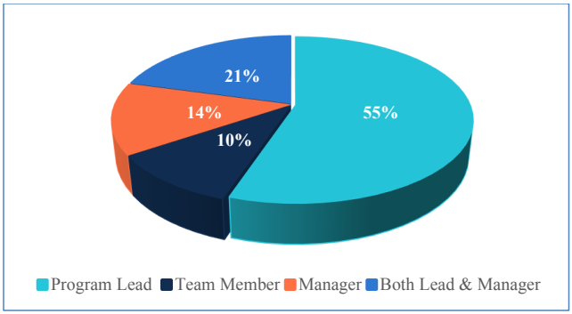
フォーカスグループ参加者のセキュリティ意識向上における役割を示す円グラフです。凡例は Program Lead（プログラム主担当、水色）、Team Member（チームメンバー、濃紺）、Manager（管理者、橙）、Both Lead & Manager（主担当と管理者の両方、青）です。値は、主担当 55%、チームメンバー 10%、管理者 14%、両方 21% です。
Figure 1: Focus Groups - Security awareness role (n=29)
図 1: フォーカスグループ - セキュリティ意識向上における役割（n=29）
Survey
サーベイ
Figure 1 shows the distribution of survey participants’ security awareness roles. There were a fairly equal number of security awareness program leads (33%) and security awareness team members (35%). Managers or executives who oversee the security awareness program accounted for 9% of survey participants, while 10% identified as both program leads and managers/executives. Eleven percent indicated that they oversaw the security awareness contract in their organization (not included in the figure) while also serving as a lead, member, or manager.
図 1 は、サーベイ参加者のセキュリティ意識向上における役割の分布を示しています。セキュリティ意識向上プログラムのリーダー（33%）とセキュリティ意識向上チームのメンバー（35%）は、ほぼ同数でした。セキュリティ意識向上プログラムを監督するマネージャーまたは幹部は、サーベイ参加者の 9% を占め、10% はプログラムのリーダーとマネージャー / 幹部の両方であると回答しました。11% は、リーダー、メンバー、またはマネージャーを務めながら、自組織のセキュリティ意識向上の契約を監督していると回答しました（図には含まれていません）。
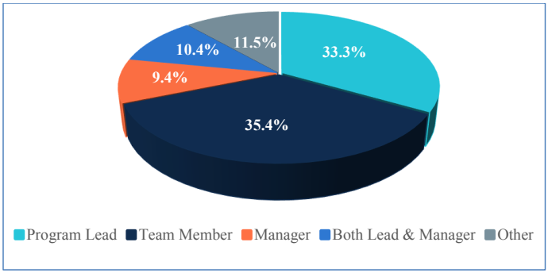
サーベイ参加者のセキュリティ意識向上における役割を示す円グラフです。凡例は Program Lead（プログラム主担当、水色）、Team Member（チームメンバー、濃紺）、Manager（管理者、橙）、Both Lead & Manager（主担当と管理者の両方、青）、Other（その他、灰色）です。値は、主担当 33.3%、チームメンバー 35.4%、管理者 9.4%、両方 10.4%、その他 11.5% です。
Figure 2: Survey - Security awareness role (n=96)
図 2: サーベイ - セキュリティ意識向上における役割（n=96）
3.1.2 Time Spent on Security Awareness
3.1.2 セキュリティ意識向上に費やす時間
Focus Groups
フォーカスグループ
The focus group demographic survey asked what percentage of time participants spend on their security awareness duties. One focus group participant did not answer this question. As shown in Figure 3, 93% are part-time, with 39% spending less than half of their time on security awareness.
フォーカスグループの属性サーベイでは、参加者がセキュリティ意識向上の業務に費やす時間の割合を尋ねました。フォーカスグループの参加者 1 人は、この質問に回答しませんでした。図 3 に示すとおり、93% が非常勤で、39% はセキュリティ意識向上に労働時間の半分未満を費やしています。
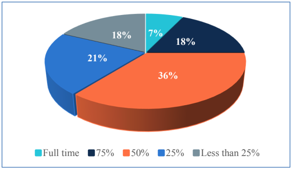
フォーカスグループ参加者がセキュリティ意識向上の職務に費やす時間を示す円グラフです。凡例は Full time（専任、水色）、75%（濃紺）、50%（橙）、25%（青）、Less than 25%（25% 未満、灰色）です。値は、専任 7%、75% が 18%、50% が 36%、25% が 21%、25% 未満が 18% です。
Figure 3: Focus Groups - Time spent on security awareness duties (n=28)
図 3: フォーカスグループ - セキュリティ意識向上の業務に費やす時間（n=28）
Survey
サーベイ
Figure 4 shows the percentage of time spent on security awareness among survey participants. Ninety percent of survey participants are part-time, with almost 56% spending less than 50% of their time on security awareness.
図 4 は、サーベイ参加者がセキュリティ意識向上に費やす時間の割合を示しています。サーベイ参加者の 90% は非常勤で、ほぼ 56% はセキュリティ意識向上に労働時間の 50% 未満を費やしています。
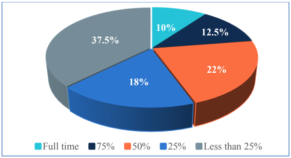
調査参加者がセキュリティ意識向上の職務に費やす時間を示す円グラフです。凡例は Full time（専任、水色）、75%（濃紺）、50%（橙）、25%（青）、Less than 25%（25% 未満、灰色）です。値は、専任 10%、75% が 12.5%、50% が 22%、25% が 18%、25% 未満が 37.5% です。
Figure 4: Survey - Time spent on security awareness duties (n=96)
図 4: サーベイ - セキュリティ意識向上の業務に費やす時間（n=96）
3.2 Organizations
3.2 組織
In this section, we describe characteristics of the organizations represented in our study.
本節では、調査に含まれた組織の特性を説明します。
3.2.1 Organization Type
3.2.1 組織の種類
Focus Groups
フォーカスグループ
Twenty-eight unique organizations were represented in the focus groups. Figure 5 shows the percentages of each organization type. Independent agencies were the most represented in the focus groups (43%), while Departments were the least represented (21%).
フォーカスグループには、28 の固有の組織が含まれていました。図 5 に、各組織の種類の割合を示します。フォーカスグループでは独立機関が最も多く含まれ（43%）、省が最も少なく含まれていました（21%）。
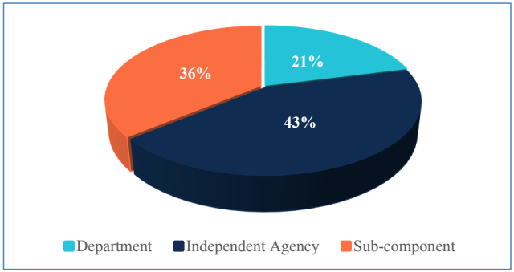
フォーカスグループに参加した組織の種類を示す円グラフです。凡例は Department（省、水色）、Independent Agency（独立機関、濃紺）、Sub-component（下部機関、橙）です。値は、省 21%、独立機関 43%、下部機関 36% です。
Figure 5: Focus Groups - Organization types (n=28)
図 5: フォーカスグループ - 組織の種類（n=28）
Survey
サーベイ
The organizations represented in the survey were fairly equally distributed between Departments (32.3%), sub-components (31.3%), and independent agencies (35.4%) (Figure 6). One participant selected “I’m not sure” for the organization type.
サーベイに含まれた組織は、省（32.3%）、下部組織（31.3%）、独立機関（35.4%）の間でほぼ均等に分布していました（図 6）。参加者 1 人は、組織の種類について「わからない」を選びました。
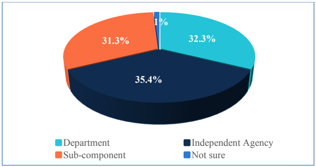
調査に参加した組織の種類を示す円グラフです。凡例は Department（省、水色）、Independent Agency（独立機関、濃紺）、Sub-component（下部機関、橙）、Not sure（不明、青）です。値は、省 32.3%、独立機関 35.4%、下部機関 31.3%、不明 1% です。
Figure 6: Survey - Organization types (n=96)
図 6: サーベイ - 組織の種類（n=96）
3.2.2 Organization Size
3.2.2 組織の規模
Organization size was determined by the number of federal employees. Participants from Departments were instructed not to include employees working in sub-components in the total size count.
組織の規模は、連邦職員数で判断しました。省の参加者には、下部組織で働く職員を総規模の人数に含めないよう指示しました。
Focus Groups
フォーカスグループ
Focus group participants were from 28 unique organizations of various sizes, with half from organizations with fewer than 10,000 federal employees.
フォーカスグループの参加者は、さまざまな規模の 28 の固有の組織の出身で、半数は連邦職員が 10,000 人未満の組織でした。
Figure 7 shows the distribution of organization sizes.
図 7 に、組織の規模の分布を示します。
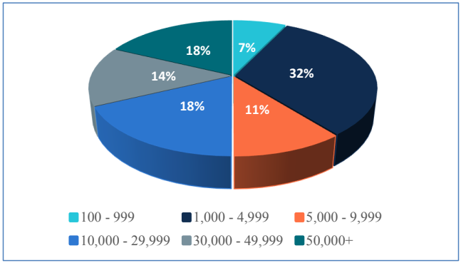
フォーカスグループの組織の規模（連邦職員数）を示す円グラフです。凡例は 100 - 999（水色）、1,000 - 4,999（濃紺）、5,000 - 9,999（橙）、10,000 - 29,999（青）、30,000 - 49,999（灰色）、50,000+（青緑）です。値は、100 - 999 が 7%、1,000 - 4,999 が 32%、5,000 - 9,999 が 11%、10,000 - 29,999 が 18%、30,000 - 49,999 が 14%、50,000+ が 18% です。
Figure 7: Focus Groups - Organization size (number of federal employees) (n=28)
図 7: フォーカスグループ - 組織の規模（連邦職員数）（n=28）
Survey
サーベイ
Figure 8 shows the granular distribution of organization sizes represented in the survey. Organizations with between 1,000 and 4,999 federal employees made up the largest subset (29.2% of organizations), followed by organizations with 50,000 or more employees (21.9%).
図 8 は、サーベイに含まれた組織の規模の詳細な分布を示しています。連邦職員が 1,000 人から 4,999 人の組織が最大のサブセット（組織の 29.2%）を占め、次いで職員が 50,000 人以上の組織（21.9%）でした。
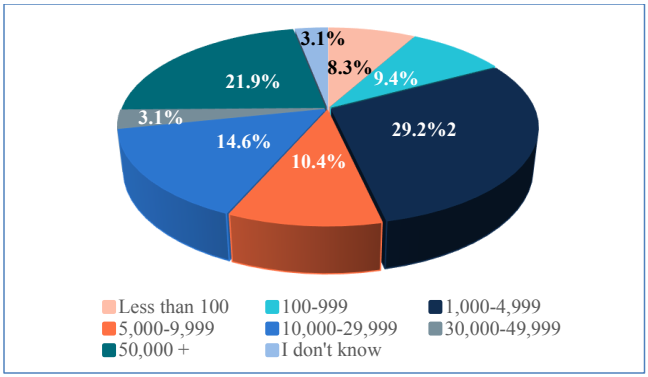
調査対象組織の規模（連邦職員数）を示す円グラフです。凡例は100未満（薄橙）、100-999（水色）、1,000-4,999（濃紺）、5,000-9,999（橙）、10,000-29,999（青）、30,000-49,999（灰色）、50,000以上（青緑）、不明（淡い青）です。値は、100未満が8.3%、100-999が9.4%、1,000-4,999が29.2%、5,000-9,999が10.4%、10,000-29,999が14.6%、30,000-49,999が3.1%、50,000以上が21.9%、不明が3.1%です。
Figure 8: Survey - Organization size (number of federal employees) (n=96)
図 8: サーベイ - 組織の規模（連邦職員数）（n=96）
3.3 Security Awareness Programs
3.3 セキュリティ意識向上プログラム
3.3.1 Program Size
3.3.1 プログラムの規模
Participants in both the focus groups and survey were asked how many people (including federal employees and contractors) were covered by the organization’s security awareness program (i.e., how many people were required to take mandatory security awareness training). This was an important distinction from organization size (measured by number of federal employees) since government organizations may be required to provide security awareness training to their contractors as well as federal employees. In addition, some organizations have employees who, because they do not access information systems, may not be required to complete security awareness training.
フォーカスグループとサーベイの両方の参加者に、組織のセキュリティ意識向上プログラムの対象となる人数（連邦職員と契約者を含みます。すなわち、必須のセキュリティ意識向上トレーニングの受講が求められる人数）を尋ねました。政府機関は、連邦職員に加えて契約者にもセキュリティ意識向上トレーニングを提供することが求められる場合があるため、これは（連邦職員数で測る）組織の規模とは異なる重要な区別でした。加えて、一部の組織には、情報システムにアクセスしないため、セキュリティ意識向上トレーニングの修了が求められない可能性のある職員がいます。
Focus Groups
フォーカスグループ
In the focus groups, 32% of the 28 organizations had programs of less than 10,000 federal employees and contractors (none less than 1,000), with the same percentage having programs covering more than 50,000 employees. One participant did not know the size of the program. Figure 9 shows the breakdown of program sizes.
フォーカスグループでは、28 組織のうち 32% が、連邦職員と契約者が 10,000 人未満のプログラムを持ち（1,000 人未満のものはありませんでした）、同じ割合の組織が、50,000 人超の職員を対象とするプログラムを持っていました。参加者 1 人は、プログラムの規模を知りませんでした。図 9 に、プログラムの規模の内訳を示します。
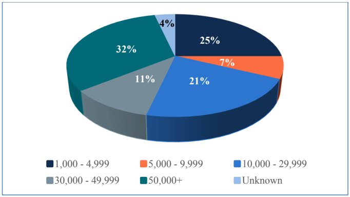
フォーカスグループのプログラム規模を示す円グラフです。凡例は 1,000 - 4,999（濃紺）、5,000 - 9,999（橙）、10,000 - 29,999（青）、30,000 - 49,999（灰色）、50,000+（青緑）、Unknown（不明、淡い青）です。値は、1,000 - 4,999 が 25%、5,000 - 9,999 が 7%、10,000 - 29,999 が 21%、30,000 - 49,999 が 11%、50,000+ が 32%、不明 4% です。
Figure 9: Focus Groups - Program size (n=28)
図 9: フォーカスグループ - プログラムの規模（n=28）
Survey
サーベイ
Survey participants were from a more diverse sample of organizations with program sizes ranging from less than 100 to over 50,000 employees, with close to half (47.4%) having programs less than 5,000 (see Figure 10).
サーベイの参加者は、より多様な組織の標本から集まっており、プログラムの規模は 100 人未満から 50,000 人超まで幅があり、半数近く（47.4%）が 5,000 人未満のプログラムでした（図 10 を参照）。
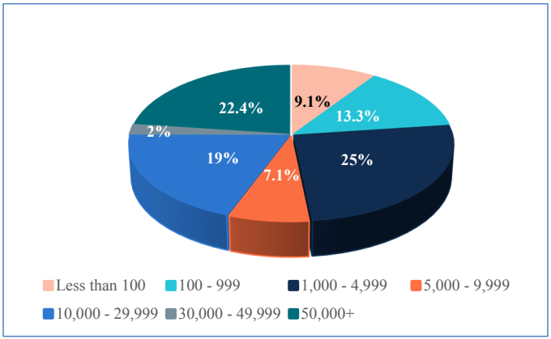
サーベイのプログラム規模を示す円グラフです。凡例は 100 未満（薄橙）、100 - 999（水色）、1,000 - 4,999（濃紺）、5,000 - 9,999（橙）、10,000 - 29,999（青）、30,000 - 49,999（灰色）、50,000 以上（青緑）です。値は、100 未満が 9.1%、100 - 999 が 13.3%、1,000 - 4,999 が 25%、5,000 - 9,999 が 7.1%、10,000 - 29,999 が 19%、30,000 - 49,999 が 2%、50,000 以上が 22.4% です。
Figure 10: Survey - Program size (n=95)
図 10: サーベイ - プログラムの規模（n=95）
In conducting further statistical analysis to look for differences in survey question responses based on program size, we grouped organizations into a smaller number of program size categories:
プログラムの規模に基づくサーベイ質問の回答の違いを調べる追加の統計分析を行うにあたり、組織をより少数のプログラム規模カテゴリーにまとめました：
•Small – Less than 1,000 employees
•小 – 1,000 人未満
•Medium – 1,000 – 4,999 employees
•中 – 1,000 人〜4,999 人
•Large – 5,000 – 29,999 employees
•大 – 5,000 人〜29,999 人
•Very Large – 30,000+ employees
•非常に大 – 30,000 人以上
Figure 11 shows the distribution for these condensed categories. These categories will be used when referring to program size in the companion reports.
図 11 に、これらの統合したカテゴリーの分布を示します。これらのカテゴリーは、関連報告書でプログラムの規模に言及する際に使用します。
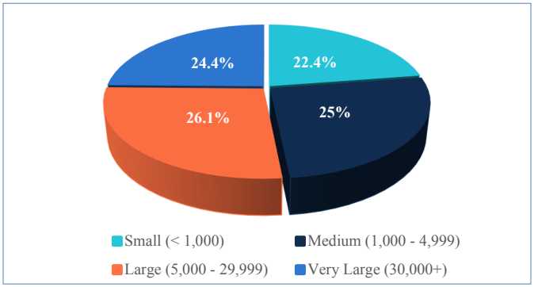
調査のプログラム規模を統合した区分で示す円グラフです。凡例は 小（< 1,000、水色）、中（1,000 - 4,999、濃紺）、大（5,000 - 29,999、橙）、非常に大（30,000+、青）です。値は、小 22.4%、中 25%、大 26.1%、非常に大 24.4% です。
Figure 11: Survey - Program size - condensed categories (n=95)
図 11: サーベイ - プログラムの規模 - 統合したカテゴリー（n=95）
3.3.2 Team Size
3.3.2 チームの規模
In both phases of the research project, we asked several questions to collect data on the number of individuals having security awareness duties within the surveyed organizations. For simplicity, we refer to the individuals with security awareness program duties as a “team” while acknowledging that the concept of a security awareness team may not exist in all organizations. Additionally, team size does not necessarily equate to full time equivalents (FTEs).1
研究プロジェクトの両方の段階で、調査対象の組織内でセキュリティ意識向上の業務を担当する個人の数に関するデータを収集するため、いくつかの質問をしました。簡潔にするために、セキュリティ意識向上プログラムの業務を担当する個人を「チーム」と呼びますが、セキュリティ意識向上チームという概念がすべての組織に存在するとは限らないことは認識しています。加えて、チームの規模は必ずしも常勤換算人数（FTE）に等しくありません。1
Focus Groups
フォーカスグループ
We asked participants how many federal employees and contractors work on the security awareness program, not including managers who only oversee the program administratively. This was an open-ended question. We also attempted to discern the number of FTEs dedicated to security awareness. However, few focus group participants were able to estimate FTEs, so the responses are omitted in this report, and this question was not included in the survey.
参加者に、セキュリティ意識向上プログラムに従事している連邦職員と契約者の人数（プログラムを管理面でのみ監督するマネージャーは除く）を尋ねました。これは自由回答の質問でした。また、セキュリティ意識向上に充てられている FTE の数を見極めることも試みました。しかし、FTE を見積もれたフォーカスグループ参加者はほとんどいなかったため、その回答は本報告書では省略し、この質問はサーベイには含めませんでした。
We grouped the number of individuals working on security awareness into four categories of team size:
セキュリティ意識向上に従事する人数を、チームの規模の 4 つのカテゴリーにまとめました。
•Very small – 1-2 people
•非常に小 – 1〜2 人
•Small – 3-5 people
•小 – 3〜5 人
•Medium – 6-10 people
•中 – 6〜10 人
•Large – 11 or more people
•大 – 11 人以上
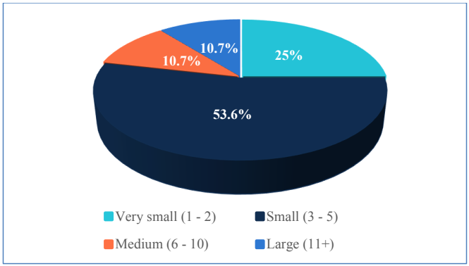
フォーカスグループのセキュリティ意識向上チームの規模を示す円グラフです。凡例は Very small (1 - 2)（極小、水色）、Small (3 - 5)（小、濃紺）、Medium (6 - 10)（中、橙）、Large (11+)（大、青）です。値は、極小 25%、小 53.6%、中 10.7%、大 10.7% です。
Figure 12: Focus Groups - Security awareness team size (n=28)
図 12: フォーカスグループ - セキュリティ意識向上チームの規模（n=28）
Figure 12 displays the distribution of team sizes amongst represented organizations. Over half of focus group participants worked on teams with 3-5 individuals. A quarter only had 1-2 individuals with security awareness duties.
図 12 に、参加組織におけるチーム規模の分布を示します。フォーカスグループ参加者の半数超は、3〜5人のチームで働いていました。4分の1の参加者が働く組織では、セキュリティ意識向上の業務を担当する人は1〜2人だけでした。
We also asked what kinds of individuals make up the team. Only four organizations (14%) had a security awareness program that is handled all in-house by federal employees. The remainder (n=24, 86%) have a mix of federal employees and contractors working together on the program.
また、チームがどのような人々で構成されているかも尋ねました。セキュリティ意識向上プログラムを連邦職員だけで運営している組織は、4つ（14%）だけでした。残り（n=24、86%）では、連邦職員と契約者が協力してプログラムに取り組んでいます。
Survey
サーベイ
Similar to the focus groups, survey participants were asked in an open-ended question how many federal employees and contractors (i.e., individuals, not FTEs) work on the security awareness program. Despite instructing respondents not to include employees who just take the training, some participants misinterpreted the question. For example, some entered the number of employees in their organizations. After removing unlikely responses, 74 responses remained.
フォーカスグループと同様に、サーベイの参加者に、セキュリティ意識向上プログラムに従事している連邦職員と契約者の人数（すなわち FTE ではなく個人）を自由回答の質問で尋ねました。トレーニングを受けるだけの職員は含めないよう回答者に指示したにもかかわらず、一部の参加者は質問を誤解しました。たとえば、自組織の職員数を入力した参加者がいました。ありそうにない回答を除外した後、74 件の回答が残りました。
Figure 13 displays the distribution of team sizes among the represented organizations. Of particular note, about 1/3 of participants worked in organizations in which only one or two individuals have direct security awareness duties. In all, 63.4% of respondents had five or less individuals on their security awareness teams.
図 13 に、参加組織におけるチーム規模の分布を示します。特に注目すべき点として、参加者の約3分の1は、セキュリティ意識向上の業務を直接担当する人が1人または2人だけの組織で働いていました。全体として、回答者の63.4%は、セキュリティ意識向上チームの人数が5人以下でした。
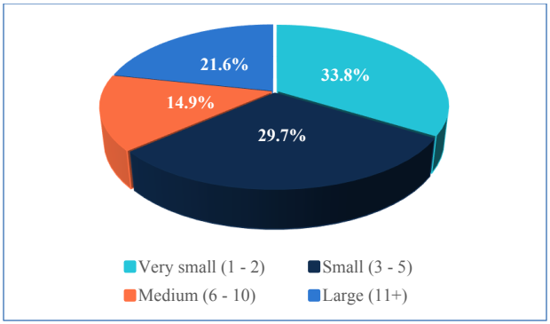
調査のセキュリティ意識向上チームの規模を示す円グラフです。凡例は Very small (1 - 2)（極小、水色）、Small (3 - 5)（小、濃紺）、Medium (6 - 10)（中、橙）、Large (11+)（大、青）です。値は、極小 33.8%、小 29.7%、中 14.9%、大 21.6% です。
Figure 13: Survey - Security awareness team size (n=74)
図 13: サーベイ - セキュリティ意識向上チームの規模（n=74）
About 31% (n = 23) of these organizations had teams that consisted of only federal employees. Approximately 68% (n = 50) had teams consisting of both federal employees and contractors. Only one had a contractor-only team.
これらの組織の約 31%（n = 23）は、連邦職員のみで構成されたチームを持っていました。約 68%（n = 50）は、連邦職員と契約者の両方で構成されたチームを持っていました。契約者のみのチームは 1 つだけでした。
We also explored whether larger programs have larger teams. Figure 14 shows the distribution of team size for different program sizes. A visual inspection suggests that Very Small teams (1-2 individuals) were common for all program sizes except for Very Large programs (30,000+ employees).
規模の大きいプログラムほどチームも大きいかどうかも調べました。図 14 に、プログラムの規模別のチームの規模の分布を示します。目視で確認すると、非常に小さいチーム（1〜2 人）は、非常に大きいプログラム（30,000 人以上）を除くすべてのプログラムの規模で一般的でした。
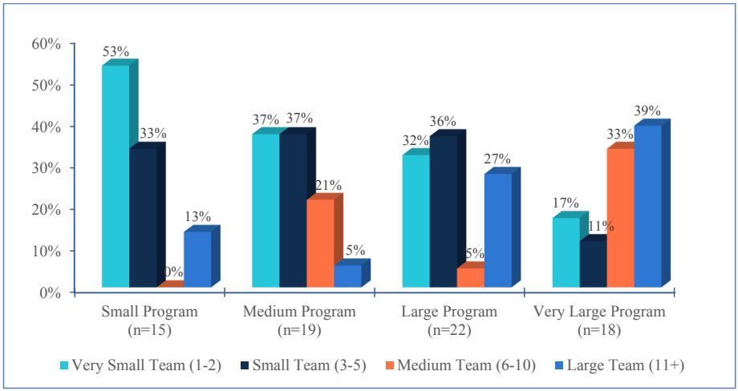
プログラムの規模別のチーム規模を示す立体集合棒グラフです。縦軸は 0%〜60% です。凡例は Very Small Team (1-2)（極小チーム、水色）、Small Team (3-5)（小チーム、濃紺）、Medium Team (6-10)（中チーム、橙）、Large Team (11+)（大チーム、青）です。Small Program (n=15)（小規模プログラム）: 極小チーム 53%、小チーム 33%、中チーム 0%、大チーム 13%。Medium Program (n=19)（中規模プログラム）: 37%、37%、21%、5%。Large Program (n=22)（大規模プログラム）: 32%、36%、5%、27%。Very Large Program (n=18)（非常に大規模なプログラム）: 17%、11%、33%、39%。
Figure 14: Survey - Team sizes for different program sizes (n=74)
図 14: サーベイ - プログラムの規模別のチームの規模（n=74）
We found a statistically significant difference in team size only between programs that were Small (< 1,000 employees) and Very Large (30,000+ employees) (Fisher’s exact test). Very Large programs tended to have larger security awareness teams than small programs.
チームの規模に統計的に有意な差が見られたのは、小さいプログラム（1,000 人未満）と非常に大きいプログラム（30,000 人以上）の間だけでした（Fisher の正確確率検定）。非常に大きいプログラムは、小さいプログラムより大きなセキュリティ意識向上チームを持つ傾向がありました。
4 Conclusion
4 結論
This report describes the background and methodology of a NIST research study to better understand the needs, challenges, practices, and necessary competencies of federal security awareness teams and programs. The research study was conducted in two phases: a series of eight focus groups of 29 federal professionals involved in their organizations’ security awareness program followed by an online survey of 96 professionals.
本報告書は、連邦のセキュリティ意識向上チームとプログラムのニーズ、課題、実践、および必要なコンピテンシーをより深く理解するための、NIST の調査研究の背景と方法論を説明しました。この調査研究は 2 段階で実施されました。組織のセキュリティ意識向上プログラムに携わる 29 人の連邦の専門家による 8 つのフォーカスグループのシリーズと、それに続く 96 人の専門家を対象としたオンラインサーベイです。
Information about the participants and organizations is also included in the report. This document serves as a foundation for research results reported in two companion documents:
本報告書には、参加者と組織に関する情報も含まれています。本文書は、次の 2 つの関連文書で報告する研究結果の基礎となるものです。
•NISTIR 8420A “Approaches and Challenges of Federal Cybersecurity Awareness Programs”
•NISTIR 8420A「Approaches and Challenges of Federal Cybersecurity Awareness Programs」
•NISTIR 8420B “The Federal Cybersecurity Awareness Workforce: Professional Backgrounds, Knowledge, Skills, and Development Activities”
•NISTIR 8420B「The Federal Cybersecurity Awareness Workforce: Professional Backgrounds, Knowledge, Skills, and Development Activities」
These documents can serve as a resource for organizations and inform guidance to aid federal organizations in building more effective cybersecurity awareness programs.
これらの文書は、組織にとっての資料となり、連邦組織がより効果的なサイバーセキュリティ意識向上プログラムを構築するためのガイダンスの策定に役立ちます。
Acknowledgements
謝辞
The authors of this document would like to acknowledge those who have made this work possible. We would like to thank the federal employees who took time out of their busy schedules to participate in the focus groups and survey and provide their valuable perspectives. We would also like to thank the following individuals who provided valuable input and feedback on the study: Rodney Petersen, Marian Merritt, Danielle Santos, Karen Wetzel, Alen Kirkorian, Dan Jacobs, Sarah Moffat, Clarence Williams, and Daniel Eliot.
本文書の著者は、この作業を可能にしてくれた方々に感謝します。多忙なスケジュールの中、時間を割いてフォーカスグループとサーベイに参加し、貴重な見解を提供してくださった連邦職員の皆様に感謝します。また、本調査に貴重な意見とフィードバックを提供してくださった次の方々にも感謝します。Rodney Petersen、Marian Merritt、Danielle Santos、Karen Wetzel、Alen Kirkorian、Dan Jacobs、Sarah Moffat、Clarence Williams、Daniel Eliot。
References
参考文献
[BADA] Bada, M, Sasse, AM, Nurse, JRC (2019) Cyber Security Awareness Campaigns: Why Do They Fail to Change Behaviour? arXiv preprint. https://arxiv.org/ftp/arxiv/papers/1901/1901.02672.pdf
[BADA] Bada, M, Sasse, AM, Nurse, JRC (2019) Cyber Security Awareness Campaigns: Why Do They Fail to Change Behaviour? arXiv preprint. https://arxiv.org/ftp/arxiv/papers/1901/1901.02672.pdf
[CISA] Cybersecurity and Infrastructure Security Agency (2021) National Cybersecurity Awareness Month (NCSAM). Available at https://www.cisa.gov/national-cyber-security-awareness-month
[CISA] Cybersecurity and Infrastructure Security Agency (2021) National Cybersecurity Awareness Month (NCSAM). 入手先: https://www.cisa.gov/national-cyber-security-awareness-month
[CLARK] Clark, VLP (2019) Meaningful integration within mixed methods studies: Identifying why, what, when, and how. Contemporary Educational Psychology 57(2019):106-111. Available at https://www.sciencedirect.com/science/article/pii/S0361476X19300128
[CLARK] Clark, VLP (2019) Meaningful integration within mixed methods studies: Identifying why, what, when, and how. Contemporary Educational Psychology 57(2019):106-111. 入手先: https://www.sciencedirect.com/science/article/pii/S0361476X19300128
[FERTIG] Fertig, T, Schütz, AE, Weber, K (2020) Current Issues of Metrics For Information Security Awareness. European Conference on Information Systems (Online). Available at https://aisel.aisnet.org/ecis2020_rp/184
[FERTIG] Fertig, T, Schütz, AE, Weber, K (2020) Current Issues of Metrics For Information Security Awareness. European Conference on Information Systems (Online). 入手先: https://aisel.aisnet.org/ecis2020_rp/184
[FISMA] Federal Information Security Modernization Act of 2014, Pub. L. 113-283, 128 Stat. 3073. https://www.govinfo.gov/app/details/PLAW-113publ283
[FISMA] Federal Information Security Modernization Act of 2014, Pub. L. 113-283, 128 Stat. 3073. https://www.govinfo.gov/app/details/PLAW-113publ283
[FISSEA] National Institute of Standards and Technology (2021) FISSEA – Federal Information Security Educators. Available at https://csrc.nist.gov/projects/fissea
[FISSEA] National Institute of Standards and Technology (2021) FISSEA – Federal Information Security Educators. 入手先: https://csrc.nist.gov/projects/fissea
[HANEY] Haney, J, Lutters, W (2020) Security Awareness Training for the Workforce: Moving Beyond “Check-the-box” Compliance. IEEE Computer 53(10):91-95. Available at https://ieeexplore.ieee.org/document/9206408
[HANEY] Haney, J, Lutters, W (2020) Security Awareness Training for the Workforce: Moving Beyond “Check-the-box” Compliance. IEEE Computer 53(10):91-95. 入手先: https://ieeexplore.ieee.org/document/9206408
[INDEED] Indeed (2021) 15 Professional Skills (Plus Definition and Tips). Available at https://www.indeed.com/career-advice/career-development/professional-skills
[INDEED] Indeed (2021) 15 Professional Skills (Plus Definition and Tips). 入手先: https://www.indeed.com/career-advice/career-development/professional-skills
[KRUEGER] Krueger, RA, Casey, MA (2015). Focus Groups: A Practical Guide for Applied Research (Sage Publications), 5th Ed.
[KRUEGER] Krueger, RA, Casey, MA (2015). Focus Groups: A Practical Guide for Applied Research (Sage Publications), 5th Ed.
[OMB2016] Office of Management and Budget (2016) Circular A-130 Managing Information as a Strategic Resource. (The White House, Washington, DC), July 28, 2016. Available at https://www.whitehouse.gov/sites/whitehouse.gov/files/omb/circulars/A130/a130revised.pdf
[OMB2016] Office of Management and Budget (2016) Circular A-130 Managing Information as a Strategic Resource. (The White House, Washington, DC), July 28, 2016. 入手先: https://www.whitehouse.gov/sites/whitehouse.gov/files/omb/circulars/A130/a130revised.pdf
[OMB2020] Office of Management and Budget (2020) Federal Information Security Modernization Act of 2014 Annual Report to Congress Fiscal Year 2020. (The White House, Washington, DC). Available at https://www.whitehouse.gov/wp-content/uploads/2021/05/FY-2020-FISMA-Report-to-Congress.pdf
[OMB2020] Office of Management and Budget (2020) Federal Information Security Modernization Act of 2014 Annual Report to Congress Fiscal Year 2020. (The White House, Washington, DC). 入手先: https://www.whitehouse.gov/wp-content/uploads/2021/05/FY-2020-FISMA-Report-to-Congress.pdf
[OPM] U.S. Office of Personnel Management (2018) Guidance for Identifying, Addressing and Reporting Cybersecurity Work Roles of Critical Need. (U.S. Office of Personnel Management, Washington, DC). Available at https://chcoc.gov/content/guidance-identifying-addressing-and-reporting-cybersecurity-work-roles-critical-need
[OPM] U.S. Office of Personnel Management (2018) Guidance for Identifying, Addressing and Reporting Cybersecurity Work Roles of Critical Need. (U.S. Office of Personnel Management, Washington, DC). 入手先: https://chcoc.gov/content/guidance-identifying-addressing-and-reporting-cybersecurity-work-roles-critical-need
[SANS] SANS (2021). 2021 SANS Security Awareness Report: Managing Human Cyber Risk. Available at https://www.sans.org/security-awareness-training/resources/reports/sareport-2021/
[SANS] SANS (2021). 2021 SANS Security Awareness Report: Managing Human Cyber Risk. 入手先: https://www.sans.org/security-awareness-training/resources/reports/sareport-2021/
[SMAC] CIO.gov (2021) About the SACC and SMAC Councils. Available at https://www.cio.gov/about/members-and-leadership/SMACC/
[SMAC] CIO.gov (2021) About the SACC and SMAC Councils. 入手先: https://www.cio.gov/about/members-and-leadership/SMACC/
[STEWART] Stewart, G, Lacey, D (2012) Death by a Thousand Facts: Criticising the Technocratic Approach to Information Security Awareness. Information Management & Computer Security 20(1):29-38.
[STEWART] Stewart, G, Lacey, D (2012) Death by a Thousand Facts: Criticising the Technocratic Approach to Information Security Awareness. Information Management & Computer Security 20(1):29-38.
[WILSON] Wilson M, Hash J (2003) Building an Information Technology Security Awareness and Training Program. (National Institute of Standards and Technology, Gaithersburg, MD), NIST Special Publication (SP) 800-50. https://doi.org/10.6028/NIST.SP.800-50
[WILSON] Wilson M, Hash J (2003) Building an Information Technology Security Awareness and Training Program. (National Institute of Standards and Technology, Gaithersburg, MD), NIST Special Publication (SP) 800-50. https://doi.org/10.6028/NIST.SP.800-50
[WOELK] Woelk, B (2015) The Successful Security Awareness Professional: Foundational Skills and Continuing Education Strategies. EDUCAUSE Center for Analysis and Research. Available at https://library.educause.edu/~/media/files/library/2016/8/erb1608.pdf
[WOELK] Woelk, B (2015) The Successful Security Awareness Professional: Foundational Skills and Continuing Education Strategies. EDUCAUSE Center for Analysis and Research. 入手先: https://library.educause.edu/~/media/files/library/2016/8/erb1608.pdf
Appendix A—Acronyms
付録 A—略語
Selected acronyms and abbreviations used in this paper are defined below.
本稿で使用する主な略語を以下に定義します。
CIO
Chief Information Officer
CIO
最高情報責任者
CISO
Chief Information Security Officer
CISO
最高情報セキュリティ責任者
FISSEA
Federal Information Security Educators
FISSEA
連邦情報セキュリティ教育者
FTE
Full Time Equivalent
FTE
常勤換算
IT
Information Technology
IT
情報技術
NICE
National Initiative for Cybersecurity Education
NICE
国家サイバーセキュリティ教育イニシアチブ
NIST
National Institute of Standards and Technology
NIST
米国国立標準技術研究所
SMAC
Small and Micro Agency CISO Council
SMAC
小規模・零細機関CISO協議会
SME
Subject Matter Expert
SME
専門分野の専門家
Appendix B—Focus Group Demographics Questions
付録 B—フォーカスグループの属性に関する質問
Note: All questions (except the first question) were optional and could be skipped by the participant. Participants had signed the informed consent before taking the survey.
注: すべての質問（最初の質問を除く）は任意で、参加者は回答を省略できました。参加者は、サーベイに回答する前にインフォームドコンセントに署名していました。
1.What is your participant code? This was provided by the NIST research team in an email.
1.あなたの参加者コードは何ですか。これは NIST の研究チームがメールで提供したものです。
This first set of questions is about you and your professional background.
この最初の一連の質問は、あなた自身とあなたの職業上の背景についてです。
2.What is your job title? _____________________________
2.あなたの職名は何ですか。 _____________________________
3.What is your role with respect to the security awareness program at your organization? Please check all that apply.
3.あなたの組織のセキュリティ意識向上プログラムに関して、あなたの役割は何ですか。当てはまるものすべてにチェックを入れてください。
•I am the government lead for the program
•私はプログラムの政府側のリーダーです
•I am a member of the security awareness team, but not the lead
•私はセキュリティ意識向上チームのメンバーですが、リーダーではありません
•I oversee the contract for the program
•私はプログラムの契約を監督しています
•I am a manager or executive who oversees the program administratively
•私はプログラムを管理面で監督するマネージャーまたは幹部です
•Other: __________________________________
•その他: __________________________________
4.Aside from security awareness responsibilities, what other job functions/roles do you have within the organization? _______________________
4.セキュリティ意識向上の責任とは別に、組織内でほかにどのような職務 / 役割を担っていますか。 _______________________
5.How many years have you been involved with security awareness programs in your current organization or in other organizations? Include time spent working on security awareness training and managing/overseeing security awareness programs.
5.現在の組織またはほかの組織で、何年間セキュリティ意識向上プログラムに携わっていますか。セキュリティ意識向上トレーニングの業務と、セキュリティ意識向上プログラムの管理 / 監督に費やした期間を含めてください。
•Less than 1 year
•1 年未満
•1 – 5 years
•1〜5 年
•6 – 10 years
•6〜10 年
•11 – 15 years
•11〜15 年
•16 – 20 years
•16〜20 年
•More than 20 years
•20 年超
6.Approximately what percentage of your time at work do you spend on tasks related to the security awareness program?
6.勤務時間のおよそ何パーセントを、セキュリティ意識向上プログラムに関連する業務に費やしていますか。
•Full-time
•フルタイム
•75%
•75%
•50%
•50%
•25%
•25%
•10%
•10%
•Less than 10%
•10% 未満
•Other: _____________
•その他: _____________
7.How many years have you been a federal employee?
7.連邦職員として何年間働いていますか。
•Less than 1 year
•1 年未満
•1 – 5 years
•1〜5 年
•6 – 10 years
•6〜10 年
•11 – 15 years
•11〜15 年
•16 – 20 years
•16〜20 年
•More than 20 years
•20 年超
8.How many years did you spend as a contractor supporting the federal government?
8.連邦政府を支援する契約者として何年間働きましたか。
•None
•なし
•Less than 1 year
•1 年未満
•1 – 5 years
•1〜5 年
•6 – 10 years
•6〜10 年
•11 – 15 years
•11〜15 年
•16 – 20 years
•16〜20 年
•More than 20 years
•20 年超
9.How many years have you worked at your current organization (including years as a contractor)?
9.現在の組織で何年間働いていますか（契約者としての年数を含む）。
•Less than 1 year
•1 年未満
•1 – 5 years
•1〜5 年
•6 – 10 years
•6〜10 年
•11 – 15 years
•11〜15 年
•16 – 20 years
•16〜20 年
•More than 20 years
•20 年超
10.How many years have you worked in some kind of cybersecurity role?
10.何らかのサイバーセキュリティの役割で何年間働いていますか。
•Less than 1 year
•1 年未満
•1 – 5 years
•1〜5 年
•6 – 10 years
•6〜10 年
•11 – 15 years
•11〜15 年
•16 – 20 years
•16〜20 年
•More than 20 years
•20 年超
11.Please list any security certifications you have earned: _____________
11.取得しているセキュリティ資格をすべて挙げてください：_____________
12.What is your age range?
12.あなたの年齢層を教えてください。
•18 – 29
•18〜29
•30 – 39
•30〜39
•40 – 49
•40〜49
•50 – 59
•50〜59
•60+
•60 以上
13.What is your highest level of education?
13.あなたの最終学歴は何ですか。
•Less than high school degree
•高校卒業未満
•High school degree or equivalent
•高校卒業またはそれと同等
•Some college
•大学在籍経験あり
•Associate degree
•準学士号
•Bachelor’s degree
•学士号
•Master’s degree
•修士号
•Doctoral or Juris Doctoral degree
•博士号または法務博士号
•Other: ______________
•その他: ______________
14.If you have any degrees beyond a high school degree, in which disciplines/fields are your degrees? _________________________________________________
14.高校卒業を超える学位をお持ちの場合、その学位の専攻分野 / 分野は何ですか。 _________________________________________________
15.What is your gender?
15.あなたの性別は何ですか。
•Female
•女性
•Male
•男性
•Other
•その他
•Prefer not to answer
•回答しない
This next set of questions is about your organization and security awareness program.
次の一連の質問は、あなたの組織とセキュリティ意識向上プログラムについてです。
16.Approximately how many federal employees work in your organization?
16.あなたの組織では、およそ何人の連邦職員が働いていますか。
17.Approximately how many people within the organization are covered by your security awareness program? Include federal employees and contractors as applicable.
17.組織内のおよそ何人が、あなたのセキュリティ意識向上プログラムの対象となっていますか。該当する場合は、連邦職員と契約者を含めてください。
18.Which of the following describes your security awareness program?
18.次のうち、あなたのセキュリティ意識向上プログラムを表しているのはどれですか。
•Handled all in-house by federal employees
•すべて連邦職員が内製で扱っている
•Mix of federal employees and contractors working on-site
•連邦職員と、現地で働く契約者の混合
•All contractors working on-site
•すべて現地で働く契約者
•Outsourced completely to an external company working off-site
•現地外で働く外部企業に完全に外部委託している
•Other: ___________________
•その他: ___________________
19.Where is the placement of the security awareness program within the organization (for example, in the CIO’s office)? _____________________________
19.セキュリティ意識向上プログラムは、組織内のどこに位置付けられていますか（たとえば、CIO のオフィス）。 _____________________________
20.How many federal employees within your organization have at least some day-to-day security awareness responsibilities? Do not include managers who only oversee the program administratively. _____________
20.あなたの組織内で、日常業務としてセキュリティ意識向上の責任を少なくともいくらか持つ連邦職員は何人ですか。プログラムを管理面でのみ監督するマネージャーは含めないでください。 _____________
21.How many contractors within your organization have at least some day-to-day security awareness responsibilities? ________________
21.あなたの組織内で、日常業務としてセキュリティ意識向上の責任を少なくともいくらか持つ契約者は何人ですか。 ________________
22.Approximately how many total full-time equivalents are allocated to security awareness responsibilities? Include federal employees and contractors. _______________
22.セキュリティ意識向上の責任に割り当てられている常勤換算人数（FTE）は、合計でおよそいくつですか。連邦職員と契約者を含めてください。 _______________
23.What is the approximate budget allocated towards security awareness in your organization? ___________________________
23.あなたの組織でセキュリティ意識向上に割り当てられているおおよその予算はいくらですか。 ___________________________
24.Please enter any additional information you feel is necessary to clarify any of your responses. __________________________________
24.回答の内容を明確にするために必要と思われる追加情報があれば入力してください。 __________________________________
Appendix C—Focus Group Questions
付録 C—フォーカスグループの質問
1.Please tell us your name, organization, and your role with respect to security awareness. [This question was not audio-recorded. Participants could decide what they wanted to share.]
1.お名前、所属組織、およびセキュリティ意識向上に関するあなたの役割を教えてください。[この質問は録音されませんでした。参加者は、話す内容を自分で決めることができました。]
2.When I say “security awareness and training,” what does that mean to you? What comes to mind?
2.「セキュリティ意識向上およびトレーニング」と言うとき、それはあなたにとって何を意味しますか。何が思い浮かびますか。
3.Tell me about your organization’s approach to security awareness and training.
3.あなたの組織のセキュリティ意識向上およびトレーニングへのアプローチについて教えてください。
4.How do you decide what topics and approaches to use for your security awareness program?
4.セキュリティ意識向上プログラムで使うトピックとアプローチを、どのように決めていますか。
a.[Probe for sub-components:] What kind of guidance/direction, if any, does your department provide? How much leeway do you have to tailor the training to your own organization?
a.[下部組織への追加質問:] 省からは、何らかのガイダンス／指示がありますか。あるとすれば、どのようなものですか。自組織に合わせてトレーニングを調整する裁量は、どの程度ありますか。
b.[Probe for department-level agencies:] What kind of guidance/direction, if any, do you push down to sub-components within your department?
b.[省レベルの機関への追加質問:] 省から省内の下部組織に対して、何らかのガイダンス／指示を伝達していますか。伝達している場合、それはどのようなものですか。
5.What’s working well with your program?
5.あなたのプログラムで、うまくいっていることは何ですか。
6.What’s not working as well? What are your challenges and concerns with respect to security awareness in your organization?
6.あまりうまくいっていないことは何ですか。あなたの組織のセキュリティ意識向上に関して、課題や懸念は何ですか。
7.How do you determine the effectiveness of your program, if at all?
7.プログラムの有効性を、もし判断しているなら、どのように判断していますか。
8.If you could have anything or do anything for your security awareness program, what would that be?
8.セキュリティ意識向上プログラムのために、何でも手に入れられる、あるいは何でもできるとしたら、それは何ですか。
a.[Probe:] What would you do to solve the challenges you currently experience?
a.[追加質問:] 現在経験している課題を解決するために、何をしますか。
b.[Probe:] What kinds and formats of resources and information sharing would be most beneficial?
b.[追加質問:] どのような種類や形式の支援資源や情報共有が最も有益ですか。
9.What knowledge, skills, or competencies do you think are needed for those performing security awareness functions in your organization?
9.あなたの組織でセキュリティ意識向上の機能を担う人々には、どのような知識、スキル、またはコンピテンシーが必要だと思いますか。
10.If you had one or two pieces of advice for someone just starting a security awareness program in an agency like yours, what would that advice be?
10.あなたのような機関で、セキュリティ意識向上プログラムを始めたばかりの人に、1 つか 2 つアドバイスをするとしたら、それは何ですか。
11.Is there anything else that we should have talked about, but didn’t?
11.ほかに、話すべきだったのに話さなかったことはありますか。
Appendix D—Survey Questions
付録 D—サーベイの質問
For the purposes of the survey:
サーベイの目的上、次のとおりとします。
The term organization refers to your federal agency.
組織という用語は、あなたの連邦機関を指します。
The term employees refers to both federal employees working for your organization and contractors supporting your organization unless explicitly categorized as one or the other (i.e., “federal employees” or “contractor employees”). Contractors are considered to be non-federal individuals supporting the organization.
職員という用語は、「連邦職員」または「契約職員」と明示的に区別されていない限り、あなたの組織で働く連邦職員と、あなたの組織を支援する契約者の両方を指します。契約者は、組織を支援する連邦職員以外の個人とみなします。
The term security will be used as a shorthand for “cybersecurity” or “information security.” Reference to physical security is different and will be labeled as such.
セキュリティという用語は、「サイバーセキュリティ」または「情報セキュリティ」の略称として使います。物理セキュリティへの言及は別であり、そのように明記します。
Security awareness programs help employees recognize and appropriately respond to security issues. Security awareness involves security information being disseminated to the general workforce within your organization. This is not to be confused with specialized role-based training, which is out of scope for this survey (but may be addressed in a future survey).
セキュリティ意識向上プログラムは、職員がセキュリティ上の問題を認識し、適切に対応できるようにするものです。セキュリティ意識向上には、組織内の一般の従業員にセキュリティ情報を周知することが含まれます。これは、本サーベイの対象外である（ただし将来のサーベイで取り上げる可能性のある）専門的なロールベースのトレーニングと混同しないでください。
As a reminder, in order to maintain anonymity, when responding to open-ended questions, please do not include any information that might identify you or your organization. However, should you accidentally include such information, the researchers will redact it from the research record.
念のためお伝えしますが、匿名性を維持するため、自由回答の質問に回答する際は、あなた自身やあなたの組織を特定しうる情報を含めないでください。ただし、誤ってそのような情報を含めてしまった場合は、研究者が研究記録から該当箇所を伏せます。
Information About You
あなた自身に関する情報
In this first section, we’ll ask you about your job and professional background.
この最初のセクションでは、あなたの仕事と職業上の背景についてお尋ねします。
1.Are you a federal employee?
1.あなたは連邦職員ですか。
•Yes
•はい
•No
•いいえ
2.Which of the following best matches your official position title?
2.次のうち、あなたの公式な職位名に最も近いものはどれですか。
•Chief Information Officer (CIO)
•Chief Information Officer（CIO）
•Chief Information Security Officer (CISO)
•Chief Information Security Officer（CISO）
•Computer Scientist
•コンピューターサイエンティスト
•IT Specialist (Cybersecurity/INFOSEC)
•IT スペシャリスト（サイバーセキュリティ / INFOSEC）
•IT Specialist – Other
•IT スペシャリスト – その他
•Program/Project Manager
•プログラム / プロジェクトマネージャー
•Supervisory Computer Scientist
•管理職のコンピューターサイエンティスト
•Supervisory IT Specialist (Cybersecurity/INFOSEC)
•管理職の IT スペシャリスト（サイバーセキュリティ / INFOSEC）
•Supervisory IT Specialist – Other
•管理職の IT スペシャリスト – その他
•Training Specialist
•トレーニングスペシャリスト
•Other: ______________________
•その他: ______________________
3.Has your organization assigned you to one or more NICE (National Initiative for Cybersecurity Education) Framework cybersecurity work roles?
3.あなたの組織は、あなたに NICE（National Initiative for Cybersecurity Education）フレームワークのサイバーセキュリティ職務上の役割を 1 つ以上割り当てていますか。
•Yes
•はい
•No
•いいえ
•I don’t know
•わからない
3A. <if yes> Which of the following NICE Framework cybersecurity work roles have you been assigned? Check all that apply.
3A. <「はい」の場合> 次のうち、あなたに割り当てられている NICE フレームワークのサイバーセキュリティ職務上の役割はどれですか。当てはまるものすべてにチェックを入れてください。
•Cyber Instructional Curriculum Developer
•Cyber Instructional Curriculum Developer
•Cyber Instructor
•Cyber Instructor
•Cyber Policy and Strategy Planner
•Cyber Policy and Strategy Planner
•Cyber Workforce Developer and Manager
•Cyber Workforce Developer and Manager
•Executive Cyber Leadership
•Executive Cyber Leadership
•Information Systems Security Manager
•Information Systems Security Manager
•IT Investment/Portfolio Manager
•IT Investment/Portfolio Manager
•IT Program Auditor
•IT Program Auditor
•IT Project Manager
•IT Project Manager
•Privacy Officer/Privacy Compliance Manager
•Privacy Officer/Privacy Compliance Manager
•Program Manager
•Program Manager
•Other: ___________________________________
•その他: ___________________________________
4.What is your role with respect to the security awareness program at your organization? Check all that apply.
4.あなたの組織のセキュリティ意識向上プログラムに関して、あなたの役割は何ですか。当てはまるものすべてにチェックを入れてください。
•I am the lead for the program responsible for implementation or management
•私は、実施または管理を担当するプログラムのリーダーです
•I am a member of the security awareness team but not the lead
•私はセキュリティ意識向上チームのメンバーですが、リーダーではありません
•I oversee the contract for the program
•私はプログラムの契約を監督しています
•I am a manager or executive who oversees and is responsible for the program administratively
•私は、プログラムを管理面で監督し、その責任を負うマネージャーまたは幹部です
•Other: ____________________________
•その他: ____________________________
5.How many years have you been involved with security awareness programs in your current organization and in other organizations (rounded to the nearest year)? Include time spent working on security awareness training and managing/overseeing security awareness programs.
5.現在の組織とほかの組織で、セキュリティ意識向上プログラムに何年間携わっていますか（最も近い整数年に四捨五入してください）。セキュリティ意識向上トレーニングの業務と、セキュリティ意識向上プログラムの管理 / 監督に費やした期間を含めてください。
•Less than 1 year
•1 年未満
•1 – 5 years
•1〜5 年
•6 – 10 years
•6〜10 年
•11 – 15 years
•11〜15 年
•16 – 20 years
•16〜20 年
•More than 20 years
•20 年超
6.Approximately what percentage of your time at work do you spend on tasks related to the security awareness program?
6.勤務時間のおよそ何パーセントを、セキュリティ意識向上プログラムに関連する業務に費やしていますか。
•Full-time
•フルタイム
•75%
•75%
•50%
•50%
•25%
•25%
•Less than 25%
•25% 未満
•Other: ________________
•その他: ________________
7.If you have any degrees beyond a high school degree, in which disciplines/fields are your degrees? ____________________________________________________________
7.高校卒業後に取得した学位がある場合、その専攻分野は何ですか。 ____________________________________________________________
8.What professional certifications, if any, have you earned? Check all that apply.
8.取得している専門資格があれば、何ですか。当てはまるものすべてにチェックを入れてください。
•Security+
•Security+
•Certified Information Systems Security Professional (CISSP)
•Certified Information Systems Security Professional (CISSP)
•CISSP specialized concentration (including CISSP-ISSEP, CISSP-ISSAP, CISSP-ISSMP)
•CISSP の専門分野認定（CISSP-ISSEP、CISSP-ISSAP、CISSP-ISSMP を含む）
•Certified Information Security Manager (CISM)
•Certified Information Security Manager (CISM)
•Project Management Professional (PMP)
•Project Management Professional (PMP)
•Certified Authorization Professional (CAP)
•Certified Authorization Professional (CAP)
•SANS Security Awareness Professional (SSAP)
•SANS Security Awareness Professional (SSAP)
•I don’t have any professional certifications
•専門資格は持っていません
•Other: ___________________________
•その他: ___________________________
9.In which of the following fields have you worked professionally? Check all that apply.
9.次の分野のうち、職業として働いたことがあるものはどれですか。当てはまるものすべてにチェックを入れてください。
•Cybersecurity
•サイバーセキュリティ
•Information technology (not a cybersecurity focus)
•情報技術（サイバーセキュリティが中心ではないもの）
•Software development
•ソフトウェア開発
•Communications
•コミュニケーション
•Marketing
•マーケティング
•Graphic design
•グラフィックデザイン
•Human resources
•人事
•Legal
•法務
•Audit/compliance
•監査 / コンプライアンス
•Instructional design or education
•インストラクショナルデザインまたは教育
•Psychology or sociology
•心理学または社会学
•Physical security
•物理セキュリティ
•Other: ________________________________
•その他: ________________________________
Information about Your Organization
あなたの組織に関する情報
In this section, we’ll ask you about your organization and the size of your security awareness program.
このセクションでは、あなたの組織と、セキュリティ意識向上プログラムの規模についてお尋ねします。
10.In which kind of organization do you work?
10.どの種類の組織で働いていますか。
•Department-level - for example, Department of Commerce or Department of Transportation
•省レベル - たとえば、Department of Commerce や Department of Transportation
•Sub-component agency or bureau under a Department - for example, NIST is a sub-component under Department of Commerce and FAA is a sub-component under Department of Transportation
•省の下にある下部組織の機関または部局 - たとえば、NIST は Department of Commerce の下部組織であり、FAA は Department of Transportation の下部組織です
•Independent agency
•独立機関
•I’m not sure
•わからない
11.Approximately how many federal employees work in your organization? If working at the department level, please do not include employees working in any formal sub-component agencies under the department.
11.あなたの組織では、およそ何人の連邦職員が働いていますか。省レベルで働いている場合は、省の下にある正式な下部組織の機関で働く職員を含めないでください。
•Less than 100
•100 未満
•100 – 999
•100 – 999
•1,000 – 4999
•1,000 – 4999
•5,000 – 9,999
•5,000 – 9,999
•10,000 – 29,999
•10,000 – 29,999
•30,000 – 49,999
•30,000 – 49,999
•50,000+
•50,000 以上
•I don’t know
•わからない
12.Approximately how many employees within your organization (federal employees and contractors) are covered by your security awareness program? If working at the department level, only include employees in sub-component agencies if the sub-components do not have a security awareness program of their own.
12.あなたの組織内で、およそ何人の職員（連邦職員と契約者）が、あなたのセキュリティ意識向上プログラムの対象となっていますか。省レベルで働いている場合は、下部組織に独自のセキュリティ意識向上プログラムがない場合に限り、下部組織の機関の職員を含めてください。
•Less than 100
•100 未満
•100 – 999
•100 – 999
•1,000 – 4999
•1,000 – 4999
•5,000 – 9,999
•5,000 – 9,999
•10,000 – 29,999
•10,000 – 29,999
•30,000 – 49,999
•30,000 – 49,999
•50,000+
•50,000 以上
•I don’t know
•わからない
13.How many federal employees and contractors work on the security awareness program in your organization? Do not include managers who only oversee the program administratively or employees or contractors who just take the training.
13.あなたの組織で、セキュリティ意識向上プログラムに従事している連邦職員と契約者は何人ですか。プログラムを管理面でのみ監督するマネージャーや、トレーニングを受けるだけの職員または契約者は含めないでください。
| Number of individuals | |
|---|---|
| Federal employees | |
| Contractors |
| 人数 | |
|---|---|
| 連邦職員 | |
| 契約者 |
Required Security Awareness Activities
必須のセキュリティ意識向上活動
This set of questions is about required security awareness training for employees in your organization. Other security awareness activities in your organization will be covered in a later section.
この一連の質問は、あなたの組織の職員に必須のセキュリティ意識向上トレーニングについてです。組織内のほかのセキュリティ意識向上活動は、後のセクションで扱います。
14.In what ways can employees fulfill their annual cybersecurity awareness requirement? Check all that apply.
14.職員は、どのような方法で年次のサイバーセキュリティ意識向上の要件を満たすことができますか。当てはまるものすべてにチェックを入れてください。
•Online, computer-based course
•オンラインのコンピューターベースのコース
•Live (in-person or virtual) training event held by my organization
•自組織が開催するライブ（対面またはバーチャル）のトレーニングイベント
•Live (in-person or virtual) training event held by external organizations
•外部組織が開催するライブ（対面またはバーチャル）のトレーニングイベント
•Other: ____________________
•その他: ____________________
15.How does your organization obtain required security awareness training or content? Check all that apply.
15.あなたの組織は、必須のセキュリティ意識向上トレーニングまたはコンテンツをどのように入手していますか。当てはまるものすべてにチェックを入れてください。
•Create within the organization
•組織内で作成する
•Purchase from outside of the organization
•組織外から購入する
•Receive from the Department (if you are a sub-component)
•省から受け取る（下部組織の場合）
•Obtain at no cost from another organization
•ほかの組織から無償で入手する
•Obtain from another government organization (other than your Department, if applicable)
•ほかの政府組織から入手する（該当する場合は、自組織の省を除く）
•Other: __________________________________
•その他: __________________________________
16.How often is the required cybersecurity awareness training content updated?
16.必須のサイバーセキュリティ意識向上トレーニングの内容は、どのくらいの頻度で更新されますか。
•At least once a year
•少なくとも年に 1 回
•Every 1 – 3 years
•1〜3 年ごと
•More than every 3 years
•3 年より長い間隔
•I don’t know
•わからない
17.What happens to employees who do not complete their required training by the deadline? Check all that apply.
17.期限までに必須のトレーニングを修了しなかった職員には、何が起こりますか。当てはまるものすべてにチェックを入れてください。
•They receive an email reminder.
•メールでリマインダーを受け取ります。
•Their supervisor is contacted.
•上司に連絡されます。
•Their account is disabled/suspended.
•アカウントが無効化 / 一時停止されます。
•Their annual performance rating is negatively impacted.
•年次の業績評価に悪影響が及びます。
•Nothing
•何も起こらない
•Other: _______________
•その他: _______________
18.Please rate the level of challenge encountered by your security awareness program for the following:
18.あなたのセキュリティ意識向上プログラムが次の事項で直面している課題の度合いを評価してください。
| Very Challenging | Moderately Challenging | Slightly Challenging | Not Challenging at all | Does not apply | |
|---|---|---|---|---|---|
| Getting employees to complete their training by the appointed deadline | • | • | • | • | • |
| Tracking which federal employees have completed their required training | • | • | • | • | • |
| Tracking which contractors have completed their required training | • | • | • | • | • |
| Finding courses/materials for required training | • | • | • | • | • |
| Finding guidance on what to include in required security awareness training | • | • | • | • | • |
| Updating required security awareness content | • | • | • | • | • |
| 非常に困難 | ある程度困難 | やや困難 | 全く困難でない | 該当しない | |
|---|---|---|---|---|---|
| 職員に、指定された期限までにトレーニングを修了させること | • | • | • | • | • |
| 必須のトレーニングを修了した連邦職員を追跡すること | • | • | • | • | • |
| 必須のトレーニングを修了した契約者を追跡すること | • | • | • | • | • |
| 必須のトレーニング用のコース / 教材を見つけること | • | • | • | • | • |
| 必須のセキュリティ意識向上トレーニングに何を含めるかに関するガイダンスを見つけること | • | • | • | • | • |
| 必須のセキュリティ意識向上コンテンツを更新すること | • | • | • | • | • |
Phishing Simulations
フィッシングシミュレーション
In this section, we’ll ask about your organization’s phishing simulation program (if you have one). Phishing simulations involve sending emails that mimic real-world phishing attempts in order to train employees to recognize and appropriately respond to phishing emails.
このセクションでは、あなたの組織のフィッシングシミュレーションプログラム（ある場合）についてお尋ねします。フィッシングシミュレーションでは、職員がフィッシングメールを認識して適切に対応できるようにトレーニングするために、実世界のフィッシングの試みを模倣したメールを送信します。
19.Does your organization perform phishing simulations?
19.あなたの組織は、フィッシングシミュレーションを実施していますか。
•Yes, and I am familiar with the phishing simulation process
•はい。フィッシングシミュレーションのプロセスをよく知っています
•Yes, but I am not familiar with the phishing simulation process
•はい。ただし、フィッシングシミュレーションのプロセスはよく知りません
•No
•いいえ
•I don’t know
•わからない
<if “yes but not familiar,” “no,” or “I don’t know,” skip the remaining questions in this section>
<「はいだがよく知らない」「いいえ」「わからない」の場合は、このセクションの残りの質問を飛ばします>
20.Approximately how often are phishing simulations conducted within your organization?
20.あなたの組織では、およそどのくらいの頻度でフィッシングシミュレーションが実施されていますか。
•1 -2 times a year
•年に 1〜2 回
•Quarterly
•四半期ごと
•Monthly
•毎月
•More frequently than once a month
•月に 1 回より頻繁
•Other: __________________
•その他: __________________
21.What happens to “repeat clickers” (individuals who repeatedly fall victim to simulated phishes)? Check all that apply.
21.「繰り返しクリックする人」（模擬フィッシングに繰り返し引っかかる個人）には、何が起こりますか。当てはまるものすべてにチェックを入れてください。
•They have to complete additional training
•追加のトレーニングを修了しなければならない
•They are counseled by a member of the security or security awareness team
•セキュリティまたはセキュリティ意識向上チームのメンバーから指導を受ける
•Their supervisors are notified
•上司に通知される
•Nothing
•何も起こらない
•Other: _____________________________________
•その他: _____________________________________
Disseminating Security Awareness Information
セキュリティ意識向上情報の周知
We’ll now ask questions related to the ways in which your program distributes security awareness information within your organization and the topics you cover.
ここからは、あなたのプログラムが組織内でセキュリティ意識向上情報を配布する方法と、扱うトピックに関する質問をします。
22.In addition to the required security awareness training, how many additional, optional security awareness activities or events (for example, speaker events, information fairs) does your organization offer on average per year?
22.必須のセキュリティ意識向上トレーニングに加えて、あなたの組織は、平均して年に何回、追加の任意のセキュリティ意識向上活動またはイベント（たとえば、講演イベント、情報フェア）を提供していますか。
•None
•なし
•1 – 2
•1〜2
•3 - 4
•3〜4
•More than 4
•4 を超える
23.How is security awareness information disseminated within your organization? Check all that apply.
23.あなたの組織では、セキュリティ意識向上情報はどのように周知されていますか。当てはまるものすべてにチェックを入れてください。
•Online, computer-based courses
•オンラインのコンピューターベースのコース
•Videos
•動画
•Webinars
•ウェビナー
•Posters/flyers
•ポスター / チラシ
•Pamphlets/handouts
•パンフレット / 配布資料
•メール
•Newsletters
•ニュースレター
•Live (in-person or virtual) events
•ライブ（対面またはバーチャル）のイベント
•Activity fairs
•アクティビティフェア
•Escape rooms
•脱出ゲーム（エスケープルーム）
•Website
•ウェブサイト
•Other: __________________________________ <have a larger text box>
•その他: __________________________________ <より大きなテキストボックスを用意する>
24.Which of the following topics have been addressed by your security awareness program via training courses, events, or other communications in the past 1-2 years? Check all that apply.
24.過去 1〜2 年に、あなたのセキュリティ意識向上プログラムが、トレーニングコース、イベント、またはその他のコミュニケーションを通じて取り上げたトピックは、次のうちどれですか。当てはまるものすべてにチェックを入れてください。
•Social engineering, for example, phishing and phone scams
•ソーシャルエンジニアリング。たとえば、フィッシングや電話詐欺
•Passwords and authentication
•パスワードと認証
•Use of removable media (like USB drives, removable hard drives)
•リムーバブルメディアの使用（USB ドライブ、リムーバブルハードドライブなど）
•Malware, including viruses, ransomware, etc.
•マルウェア。ウイルス、ランサムウェアなどを含む
•Web browsing
•ウェブの閲覧
•Telework
•テレワーク
•How to respond to potential cybersecurity incidents
•サイバーセキュリティインシデントの可能性への対応方法
•Privacy, including handling personally and business identifying information
•プライバシー。個人および事業を特定する情報の取り扱いを含む
•Installing and updating software
•ソフトウェアのインストールと更新
•Organizational/government security policies, requirements, and guidance
•組織 / 政府のセキュリティポリシー、要件、およびガイダンス
•Mobile device security
•モバイルデバイスのセキュリティ
•Social media
•ソーシャルメディア
•Physical security and safety
•物理セキュリティと安全
•Other: ___________________
•その他: ___________________
25.How often does your security awareness program provide employees with information applicable to their personal/home lives? Never – Rarely – Occasionally – A moderate amount – A great deal
25.あなたのセキュリティ意識向上プログラムは、職員の私生活 / 家庭生活に当てはまる情報を、どのくらいの頻度で提供していますか。全くない – まれに – 時々 – ある程度 – 非常に多く
26.If there have been changes in your program due to the COVID-19 pandemic, which, if any do you anticipate continuing post-pandemic? <open-ended text box>
26.COVID-19 パンデミックのためにプログラムに変更があった場合、パンデミック後も続くと見込んでいるものは何ですか（あれば）。<自由回答のテキストボックス>
27.Please rate the level of challenge encountered by your security awareness program for the following:
27.あなたのセキュリティ意識向上プログラムが次の事項で直面している課題の度合いを評価してください。
| Very Challenging | Moderately Challenging | Slightly Challenging | Not Challenging at all | Does not apply | |
|---|---|---|---|---|---|
| Providing security awareness information in an engaging way | • | • | • | • | • |
| Customizing security awareness information to people with varying needs and levels of IT and security knowledge | • | • | • | • | • |
| Communicating security awareness information to a distributed work force | • | • | • | • | • |
| Finding existing security awareness materials to use | • | • | • | • | • |
| Ensuring security awareness materials are 508 compliant | • | • | • | • | • |
| 非常に困難 | ある程度困難 | やや困難 | 全く困難でない | 該当しない | |
|---|---|---|---|---|---|
| セキュリティ意識向上情報を魅力的な方法で提供すること | • | • | • | • | • |
| さまざまなニーズや IT・セキュリティ知識の水準を持つ人々に合わせて、セキュリティ意識向上情報をカスタマイズすること | • | • | • | • | • |
| 分散した労働力にセキュリティ意識向上情報を伝えること | • | • | • | • | • |
| 使用できる既存のセキュリティ意識向上教材を見つけること | • | • | • | • | • |
| セキュリティ意識向上教材が 508 条（Section 508）に準拠していることを確実にすること | • | • | • | • | • |
28.In what ways, if any, does your program reward or recognize employees for practicing good security behaviors? (Check all that apply.)
28.あなたのプログラムは、良いセキュリティ行動を実践した職員に、どのような方法で報酬を与えたり評価したりしていますか（あれば）。（当てはまるものすべてにチェックを入れてください。）
•Personal “thank you”
•個人的な「ありがとう」
•Certificate or virtual badge
•証明書またはバーチャルバッジ
•Organizational recognition
•組織としての表彰
•Monetary award
•金銭的な報酬
•Other: _________________________
•その他: _________________________
•We don’t reward or recognize people
•人々に報酬を与えたり評価したりしていない
Informing Security Awareness Content
セキュリティ意識向上コンテンツへの情報提供
In this section, we ask about sources that inform your security awareness program, including with whom you collaborate.
このセクションでは、連携する相手を含め、あなたのセキュリティ意識向上プログラムに情報を提供する情報源についてお尋ねします。
29.If your organization is a sub-component (agency under a department), which of the following best describes the security awareness relationship with your Department?
29.あなたの組織が下部組織（省の下にある機関）である場合、省とのセキュリティ意識向上に関する関係を最もよく表しているのは、次のうちどれですか。
•Does not apply, not a sub-component
•該当しない（下部組織ではない）
•We must use the security awareness training provided to us by the Department
•省から提供されたセキュリティ意識向上トレーニングを使用しなければならない
•The Department provides training, but using it is optional and/or we can tailor it to meet our needs
•省がトレーニングを提供するが、その使用は任意である、または自組織のニーズに合わせて調整できる
•The Department provides topics that must be included, but does not provide training
•省は含めなければならないトピックを提示するが、トレーニングは提供しない
•The Department does not provide us with any materials or guidance
•省は、いかなる教材もガイダンスも提供しない
•Other: ________________
•その他: ________________
30.If your organization is a Department, what types of security awareness training information does your organization push down to your sub-component agencies?
30.あなたの組織が省である場合、あなたの組織は、どのような種類のセキュリティ意識向上トレーニング情報を下部組織の機関に下ろしていますか。
•Does not apply, not a department
•該当しない（省ではない）
•We provide security awareness training that the sub-components must use
•下部組織が使用しなければならないセキュリティ意識向上トレーニングを提供する
•We provide security awareness training, but the sub-components have the option of using it
•セキュリティ意識向上トレーニングを提供するが、下部組織はそれを使用するかどうかを選択できる
•We provide topics that must be included, but do not provide training
•含めなければならないトピックを提示するが、トレーニングは提供しない
•We do not provide sub-components with any materials or guidance
•下部組織に、いかなる教材もガイダンスも提供しない
•We don’t have sub-component agencies under our Department
•自組織の省の下に下部組織の機関はない
•Other: ________________________
•その他: ________________________
31.With which groups in your own organization does the security awareness team collaborate? Check all that apply.
31.セキュリティ意識向上チームは、自組織内のどのグループと連携していますか。当てはまるものすべてにチェックを入れてください。
•Cybersecurity incident response
•サイバーセキュリティインシデント対応
•Other cybersecurity groups outside of the security awareness team
•セキュリティ意識向上チーム以外のその他のサイバーセキュリティグループ
•Information technology
•情報技術
•Physical security
•物理セキュリティ
•Communications and marketing
•広報とマーケティング
•Human resources
•人事
•Privacy team
•プライバシーチーム
•General Counsel
•法務顧問（General Counsel）
•Other: ___________________________________
•その他: ___________________________________
32.Which of the following sources within your own organization inform security awareness topics and approaches? Check all that apply.
32.自組織内の次の情報源のうち、セキュリティ意識向上のトピックとアプローチに情報を提供しているものはどれですか。当てはまるものすべてにチェックを入れてください。
•Security incidents within the organization
•組織内のセキュリティインシデント
•Employee feedback/input
•職員からのフィードバック / 意見
•Leadership feedback/input
•リーダーシップからのフィードバック / 意見
•Other: ________________________
•その他: ________________________
33.Which of the following external sources help inform your organization’s security awareness training and approaches? Check all that apply.
33.次の外部の情報源のうち、あなたの組織のセキュリティ意識向上トレーニングとアプローチに情報を提供する助けとなっているものはどれですか。当てはまるものすべてにチェックを入れてください。
•Government mailing lists, websites, articles, online resources
•政府のメーリングリスト、ウェブサイト、記事、オンラインリソース
•Non-government mailing lists, websites, articles, online resources
•政府以外のメーリングリスト、ウェブサイト、記事、オンラインリソース
•Government working groups
•政府のワーキンググループ
•Non-government working groups
•政府以外のワーキンググループ
•Security incidents in other organizations
•ほかの組織でのセキュリティインシデント
•Conferences
•カンファレンス
•Other: ____________________________________
•その他: ____________________________________
34.Have you ever attended the Federal Information Security Educators (FISSEA) Conference?
34.Federal Information Security Educators（FISSEA）カンファレンスに参加したことはありますか。
•Yes, I have attended FISSEA
•はい。FISSEA に参加したことがあります
•No, but I’ve heard of FISSEA
•いいえ。ただし、FISSEA のことは聞いたことがあります
•No, and I’ve never heard of FISSEA
•いいえ。FISSEA のことは聞いたこともありません
35.Have you ever used NIST Special Publication 800-50 “Building an Information Technology Security Awareness and Training Program” to inform your security awareness program?
35.セキュリティ意識向上プログラムの参考にするために、NIST Special Publication 800-50「Building an Information Technology Security Awareness and Training Program」を使用したことはありますか。
•Yes
•はい
•No, but I know of it
•いいえ。ただし、存在は知っています
•No, and I don’t know of it
•いいえ。存在も知りません
36.Please rate the level of challenge encountered by your security awareness program for the following:
36.あなたのセキュリティ意識向上プログラムが次の事項で直面している課題の度合いを評価してください。
| Very Challenging | Moderately Challenging | Slightly Challenging | Not Challenging at all | Does not apply | |
|---|---|---|---|---|---|
| Collaborating/sharing information with other groups in my organization | • | • | • | • | • |
| Collaborating/sharing information with other federal security awareness professionals | • | • | • | • | • |
| Finding external sources of information relevant to my security awareness program | • | • | • | • | • |
| 非常に困難 | ある程度困難 | やや困難 | 全く困難でない | 該当しない | |
|---|---|---|---|---|---|
| 自組織内のほかのグループと連携する / 情報を共有すること | • | • | • | • | • |
| 連邦のほかのセキュリティ意識向上の専門家と連携する / 情報を共有すること | • | • | • | • | • |
| 自分のセキュリティ意識向上プログラムに関連する外部の情報源を見つけること | • | • | • | • | • |
Determining Security Awareness Program Effectiveness
セキュリティ意識向上プログラムの有効性の判断
We’ll now ask about how your organization determines the level of success of your security awareness program.
ここからは、あなたの組織がセキュリティ意識向上プログラムの成功の度合いをどのように判断しているかについてお尋ねします。
37.Please rate your level of agreement with the following statements:
37.次の記述に対する同意の度合いを評価してください。
| Strongly Disagree | Disagree | Neither Agree nor Disagree | Agree | Strongly Agree | |
|---|---|---|---|---|---|
| Among my organization’s leadership, compliance with security awareness training requirements is considered the most important indicator of success for our security awareness program | • | • | • | • | • |
| In my own opinion, compliance with security awareness training requirements is the most important indicator of success for our security awareness program. | • | • | • | • | • |
| 全くそう思わない | そう思わない | どちらともいえない | そう思う | 強くそう思う | |
|---|---|---|---|---|---|
| 自組織のリーダーシップの間では、セキュリティ意識向上トレーニングの要件への準拠が、自組織のセキュリティ意識向上プログラムの成功の最も重要な指標とみなされている | • | • | • | • | • |
| 私自身の意見では、セキュリティ意識向上トレーニングの要件への準拠が、自組織のセキュリティ意識向上プログラムの成功の最も重要な指標です。 | • | • | • | • | • |
38.How does your organization determine or measure the effectiveness of your security awareness program? Check all that apply.
38.あなたの組織は、セキュリティ意識向上プログラムの有効性をどのように判断または測定していますか。当てはまるものすべてにチェックを入れてください。
•Required training completion rates
•必須トレーニングの修了率
•Audit reports or FISMA (Federal Information Security Modernization Act of 2014) evaluations
•監査報告書または FISMA（Federal Information Security Modernization Act of 2014）の評価
•Phishing click rates (number of people who click on a simulated phishing email/link)
•フィッシングのクリック率（模擬フィッシングメール / リンクをクリックした人数）
•Employee reporting of simulated phishing emails
•職員による模擬フィッシングメールの報告
•Employee reporting of potential phishing emails (outside of phishing simulations)
•職員による（フィッシングシミュレーション以外での）フィッシングの可能性があるメールの報告
•Employee reporting of other security incidents
•職員によるその他のセキュリティインシデントの報告
•Surveys
•サーベイ
•Informal employee feedback/comments (for example, in-person, emails)
•非公式な職員のフィードバック / コメント（たとえば、対面、メール）
•Attendance at security awareness events
•セキュリティ意識向上イベントへの参加
•Online views of training materials
•トレーニング教材のオンライン閲覧数
•Security incident trends
•セキュリティインシデントの傾向
•We don’t try to determine the effectiveness
•有効性を判断しようとはしていない
•Other: ___________________________
•その他: ___________________________
<If “We don’t try to determine the effectiveness,” skip next question>
<「有効性を判断しようとはしていない」の場合は、次の質問を飛ばします>
39.How does your security awareness program use program effectiveness data? Check all that apply.
39.あなたのセキュリティ意識向上プログラムは、プログラムの有効性のデータをどのように使っていますか。当てはまるものすべてにチェックを入れてください。
•We use the data to demonstrate our compliance with training mandates.
•データを使って、トレーニングの義務への準拠を示しています。
•We provide the data to leadership to show the value of the security awareness program.
•セキュリティ意識向上プログラムの価値を示すために、データをリーダーシップに提供しています。
•We use the data to justify additional resources for the security awareness program.
•データを使って、セキュリティ意識向上プログラムへの追加のリソースを正当化しています。
•We provide the data to employees so there’s more transparency about the security awareness program.
•セキュリティ意識向上プログラムの透明性を高めるために、データを職員に提供しています。
•We use the data to improve/inform the security awareness program.
•データを使って、セキュリティ意識向上プログラムを改善し、その内容に反映しています。
•We provide the data to other groups in our organization to help improve/inform their own programs or processes.
•組織内のほかのグループが自らのプログラムやプロセスを改善し、情報を得るのに役立つよう、データを提供しています。
•Other: ___________________________________________
•その他: ___________________________________________
40.If you are a manager or executive who is involved in making decisions about the security awareness program, what data would help demonstrate the value and effectiveness of the security awareness program? <open-ended text box>
40.あなたが、セキュリティ意識向上プログラムに関する意思決定に携わるマネージャーまたは幹部である場合、セキュリティ意識向上プログラムの価値と有効性を示すのに役立つデータは何ですか。<自由回答のテキストボックス>
41.Please rate the level of challenge encountered by your security awareness program for the following:
41.あなたのセキュリティ意識向上プログラムが次の事項で直面している課題の度合いを評価してください。
| Very Challenging | Moderately Challenging | Slightly Challenging | Not Challenging at all | Does not apply | |
|---|---|---|---|---|---|
| Determining what and how to measure | • | • | • | • | • |
| Effectively presenting data to leadership | • | • | • | • | • |
| Integrating/correlating security awareness data with data collected by other groups in my organization | • | • | • | • | • |
| Benchmarking my organization against other federal organizations | • | • | • | • | • |
| 非常に困難 | ある程度困難 | やや困難 | 全く困難でない | 該当しない | |
|---|---|---|---|---|---|
| 何をどのように測定するかを決定すること | • | • | • | • | • |
| データをリーダー層に効果的に提示すること | • | • | • | • | • |
| セキュリティ意識向上のデータを、自組織内のほかのグループが収集したデータと統合 / 相関させること | • | • | • | • | • |
| 自組織を連邦のほかの組織と比較してベンチマークすること | • | • | • | • | • |
42.What would you say are the most successful aspects of your security awareness program? <open-ended text box>
42.あなたのセキュリティ意識向上プログラムで最も成功している側面は何だと思いますか。<自由回答のテキストボックス>
43.In your opinion, how successful is your security awareness program? Very unsuccessful – Unsuccessful - Slightly successful – Moderately successful – Very successful
43.あなたの意見では、あなたのセキュリティ意識向上プログラムはどの程度成功していますか。全く成功していない – 成功していない – やや成功している – ある程度成功している – 非常に成功している
Support for the security awareness program
セキュリティ意識向上プログラムに対する支援
In this section, you’ll tell us your perceptions of the level of support within your organization for cybersecurity and the security awareness program.
このセクションでは、あなたの組織内での、サイバーセキュリティとセキュリティ意識向上プログラムに対する支援の度合いについて、あなたの認識を教えてください。
44.Please indicate your level of agreement with each of the following statements:
44.次の各記述に対する同意の度合いを示してください。
| Strongly Disagree | Disagree | Neither Agree nor Disagree | Agree | Strongly Agree | |
|---|---|---|---|---|---|
| Security is a priority for my organization. | • | • | • | • | • |
| My organization’s leadership understands how/why security is relevant to them. | • | • | • | • | • |
| The employees in my organization understand how/why security is relevant to them. | • | • | • | • | • |
| My organization’s leadership is supportive of the security awareness program. | • | • | • | • | • |
| The employees in my organization are supportive of the security awareness program. | • | • | • | • | • |
| We have adequate funding for the security awareness program. | • | • | • | • | • |
| We have adequate staff dedicated to the security awareness program. | • | • | • | • | • |
| We have the necessary technology to support the security awareness program. | • | • | • | • | • |
| 全くそう思わない | そう思わない | どちらともいえない | そう思う | 強くそう思う | |
|---|---|---|---|---|---|
| セキュリティは、自組織にとって優先事項です。 | • | • | • | • | • |
| 自組織のリーダー層は、セキュリティが自分たちにどのように / なぜ関連するのかを理解しています。 | • | • | • | • | • |
| 自組織の職員は、セキュリティが自分たちにどのように / なぜ関連するのかを理解しています。 | • | • | • | • | • |
| 自組織のリーダー層は、セキュリティ意識向上プログラムを支援しています。 | • | • | • | • | • |
| 自組織の職員は、セキュリティ意識向上プログラムを支援しています。 | • | • | • | • | • |
| セキュリティ意識向上プログラムのための十分な資金があります。 | • | • | • | • | • |
| セキュリティ意識向上プログラムに専従する十分な人員があります。 | • | • | • | • | • |
| セキュリティ意識向上プログラムを支援するために必要な技術があります。 | • | • | • | • | • |
Knowledge, Skills, Professional development
知識、スキル、専門能力開発
In this section, we ask about the knowledge and skills needed by your security awareness team.
このセクションでは、あなたのセキュリティ意識向上チームに必要な知識とスキルについてお尋ねします。
45.Please rate the level of importance of having the following knowledge and skills in a security awareness team in an organization like yours?
45.あなたの組織のような組織のセキュリティ意識向上チームに、次の知識とスキルが備わっていることの重要度を評価してください。
| Not important at all | Low importance | Moderate importance | High importance | |
|---|---|---|---|---|
| Cybersecurity knowledge and skills | • | • | • | • |
| Privacy knowledge and skills | • | • | • | • |
| Information technology knowledge and skills | • | • | • | • |
| Written communication skills | • | • | • | • |
| Oral communication skills | • | • | • | • |
| Marketing skills | • | • | • | • |
| Adult learning/instructional development knowledge and skills | • | • | • | • |
| Program management skills | • | • | • | • |
| Creativity and adaptability | • | • | • | • |
| Interpersonal skills | • | • | • | • |
| Moderating/group facilitation skills | • | • | • | • |
| Knowledge of cybersecurity policies | • | • | • | • |
| Knowledge of organizational mission, processes, and dynamics | • | • | • | • |
| 全く重要でない | 重要度は低い | 重要度は中程度 | 重要度は高い | |
|---|---|---|---|---|
| サイバーセキュリティの知識とスキル | • | • | • | • |
| プライバシーの知識とスキル | • | • | • | • |
| 情報技術の知識とスキル | • | • | • | • |
| 文章によるコミュニケーションスキル | • | • | • | • |
| 口頭でのコミュニケーションスキル | • | • | • | • |
| マーケティングスキル | • | • | • | • |
| 成人学習 / 指導設計の知識とスキル | • | • | • | • |
| プログラム管理スキル | • | • | • | • |
| 創造性と適応力 | • | • | • | • |
| 対人スキル | • | • | • | • |
| 司会 / グループファシリテーションスキル | • | • | • | • |
| サイバーセキュリティポリシーの知識 | • | • | • | • |
| 組織のミッション、プロセス、ダイナミクスの知識 | • | • | • | • |
46.Other than the knowledge and skills listed above, please list any other knowledge and skills you think are of high importance for a security awareness team: <open-ended text>
46.上に挙げた知識とスキル以外に、セキュリティ意識向上チームにとって重要度が高いと思う知識とスキルがあれば挙げてください: <自由回答のテキスト>
47.Please rate your agreement with the following statement: In my organization, the security awareness team has the right mix of necessary knowledge and skills.
47.次の記述に対する同意の度合いを評価してください: 自組織では、セキュリティ意識向上チームが、必要な知識とスキルを適切な組み合わせで備えています。
Strongly disagree – Disagree – Neither Agree nor Disagree – Agree – Strongly Agree
全くそう思わない – そう思わない – どちらともいえない – そう思う – 強くそう思う
48.Which of the following professional development activities have helped you develop knowledge and skills needed for your security awareness role? Check all that apply.
48.次の能力開発活動のうち、あなたのセキュリティ意識向上の担当業務に必要な知識とスキルを身につけるのに役立ったものはどれですか。当てはまるものすべてにチェックを入れてください。
•College courses
•大学の講座
•Online, computer-based training courses
•オンラインのコンピューターベースのトレーニングコース
•Live (in-person or virtual) training courses
•ライブ（対面またはバーチャル）のトレーニングコース
•Professional certifications
•専門資格
•Attending conferences
•カンファレンスへの参加
•Self-study (for example, reading articles, listening to podcasts, hands-on experience)
•独学（たとえば、記事を読む、ポッドキャストを聞く、実地経験）
•Other: ________________________
•その他: ________________________
•I haven’t engaged in any professional development activities that have helped me in my role
•自分の役割に役立った能力開発活動には取り組んでいない
49.Please rate your agreement with the following statement: In my organization, I have been provided adequate professional development opportunities to help me in my security awareness role.
49.次の記述に対する同意の度合いを評価してください: 自組織では、セキュリティ意識向上の担当業務に役立つ十分な能力開発の機会が提供されてきました。
Strongly disagree – Disagree – Neither Agree nor Disagree – Agree – Strongly Agree
全くそう思わない – そう思わない – どちらともいえない – そう思う – 強くそう思う
Final Thoughts
最後に
In this last section, we’ll give you the opportunity to share your own lessons learned and any other information you think would be useful for us to know.
この最後のセクションでは、あなた自身が学んだ教訓や、私たちが知っておくと有用だと思うその他の情報を共有していただけます。
50.What are the most important pieces of advice or lessons learned you might pass on to someone just starting a security awareness program in an organization like yours? <open-ended text box>
50.あなたの組織のような組織でセキュリティ意識向上プログラムを始めたばかりの人に伝えられる、最も重要なアドバイスや学んだ教訓は何ですか。<自由回答のテキストボックス>
51.What could help your organization’s security awareness program be more successful? <open-ended text box>
51.あなたの組織のセキュリティ意識向上プログラムをより成功させるのに何が役立つでしょうか。<自由回答のテキストボックス>
52.Please describe anything else related to your organization’s experiences or challenges with security awareness that you’d like us to know. <open-ended text box>
52.セキュリティ意識向上に関する、あなたの組織の経験や課題について、ほかに私たちに知ってほしいことがあれば説明してください。<自由回答のテキストボックス>